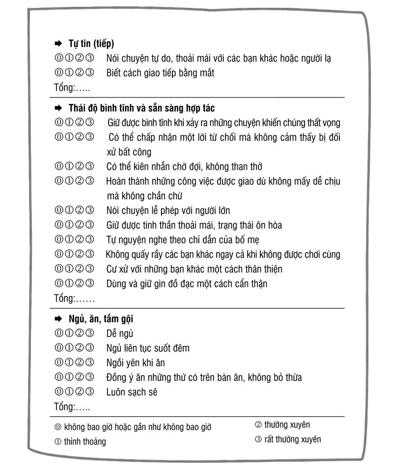
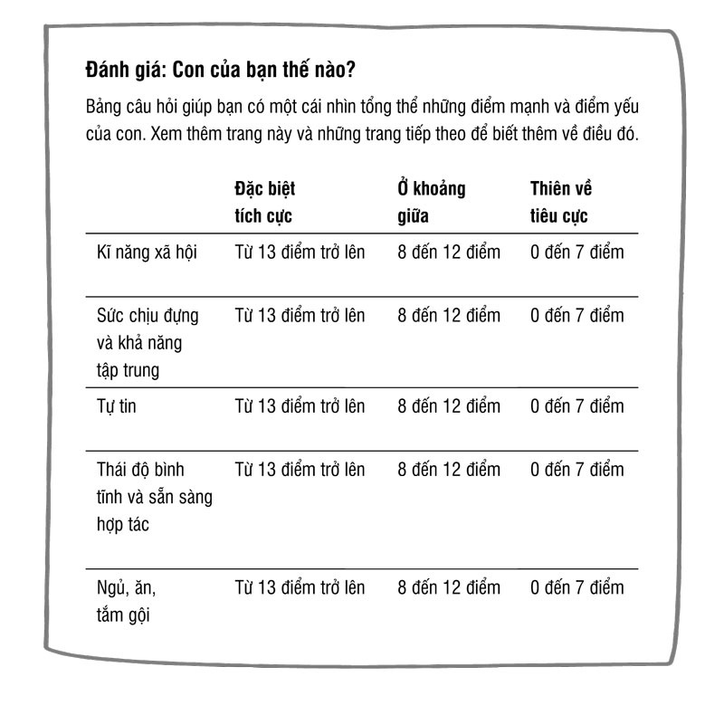
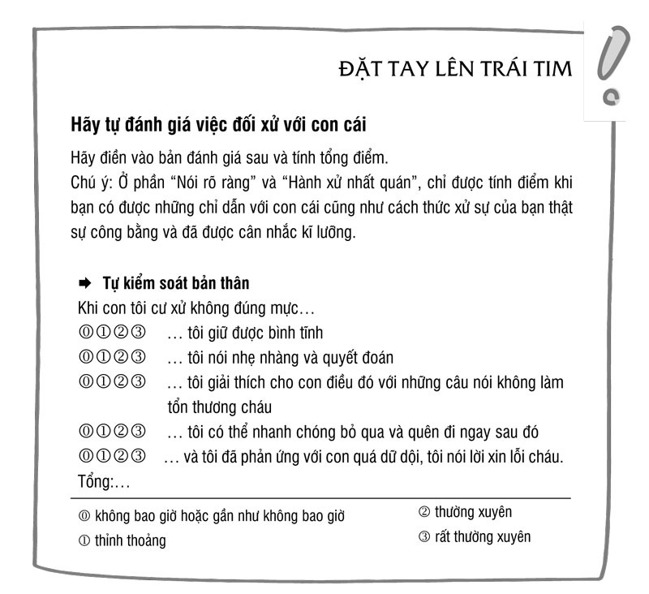
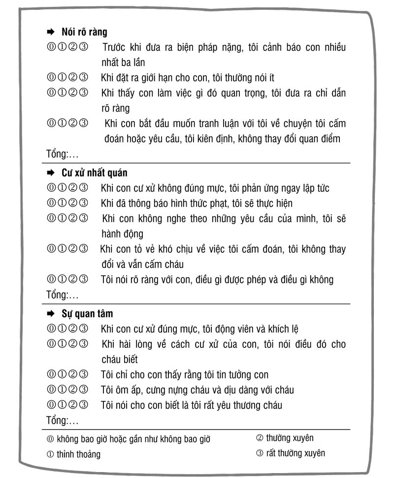
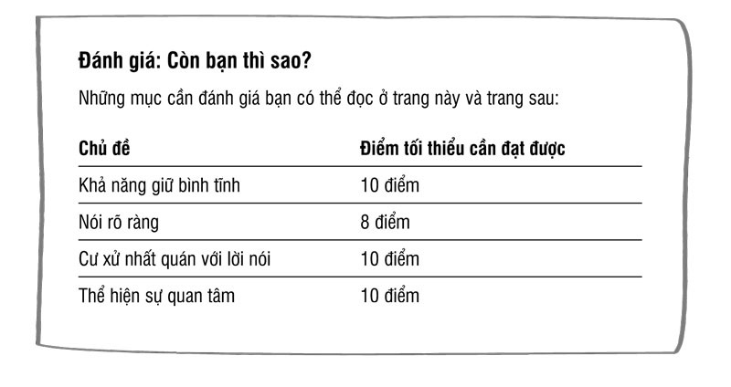

LỜI Tựa
TẠI SAO GIÁO DỤC CON TRẺ LẠI VẤT VẢ?
Nếu trẻ em là những đứa trẻ yêu thích sự hòa thuận và luôn khao khát được chung sống yên ổn với bố mẹ và anh chị em của mình thì việc giáo dục chúng sẽ trở nên thật dễ dàng. Tuy nhiên thực tế lại không như vậy. Từ khi còn nhỏ, trẻ em đã là những cá thể riêng và biết rõ chúng muốn gì, thậm chí còn biết rõ hơn những gì chúng không muốn. Chúng sẵn sàng cự nự với bố mẹ để được làm theo ý thích của mình. Chúng ta, những bậc phụ huynh, cần phải chịu đựng điều này và không hề đơn giản bởi trên thực tế trẻ em có hệ thần kinh tốt hơn chúng ta.
Cha mẹ cần cho con cái tất cả những gì chúng thật sự cần. Nhưng có nên cho chúng những thứ chúng muốn? Không phải tất cả những gì trẻ em muốn đều tốt cho bản thân chúng. Chúng ta là người lớn. Chúng ta có trách nhiệm phải quyết định:
Con cần gì - Con muốn những gì? Tôi phải làm gì khi con không chịu làm những điều lẽ ra chúng phải làm? Hay khi chúng không chịu ngưng tay chân dù tôi đã nhắc nhở chúng? Làm sao để tôi có thể cùng lúc vừa giữ được bình tĩnh nhưng vẫn công bằng? Tôi có thể làm gì để những xung đột hàng ngày không dẫn đến khủng hoảng? Và khi gặp khủng hoảng thì có những giải pháp nào? Những giải pháp nào phù hợp với tôi? Tất cả những câu hỏi này sẽ được trả lời trong cuốn sách với ví dụ cụ thể lấy từ những tình huống khủng hoảng và xung đột hàng ngày mà chúng ta thường gặp với trẻ từ 2 tuổi trở lên.
Với kinh nghiệm nhiều năm trong lĩnh vực nghiên cứu và vận dụng kiến thức về tâm lí trẻ nhỏ, tôi biết rằng trong giáo dục con trẻ thường nảy sinh rất nhiều vấn đề và điều này khiến chúng ta cảm thấy mệt mỏi. Qua quá trình tiếp xúc với rất nhiều trẻ em và các bậc cha mẹ, tôi đã học được những điều thật sự hữu ích để giúp cho các bậc phụ huynh có thể giải quyết những vấn đề nảy sinh trong quá trình trưởng thành của trẻ. Trong những điều chỉ dẫn và mẹo nhỏ của mình, tôi đã cố gắng lưu ý và liên hệ đến những kiến thức khoa học mới nhất. Điều thú vị là tôi đã học hỏi được rất nhiều từ ba đứa con của mình và muốn thực sự cảm ơn các con về điều đó.
Tôi mong rằng cuốn sách sẽ đem lại niềm vui cho bạn đọc!
Chương 1: Khủng hoảng trong khi dạy dỗ con cái hình thành như thế nào?
a. Con bạn cần gì - muốn gì?
TRẺ EM THỰC SỰ LÀ ĐIỀU TUYỆT VỜI.
Chúng dễ thương, mỏng manh, khác biệt và đáng yêu. Chúng tập đi, tập nói và thoáng một cái đã lớn, làm chủ thế giới này. Trái tim chúng ta rộn rã yêu thương mỗi khi con trẻ nhìn vào mắt ta. Mặc dù vậy, tại sao nhiều cặp đôi lại không hề muốn có con? Chẳng lẽ là do người ta nghĩ nuôi một đứa trẻ rất tốn kém, hay vì họ nghe mọi người thường kêu ca việc nuôi dạy con rất vất vả?
Đặc biệt, điều làm chúng ta nản chí chính là những chương trình truyền hình thực tế trên tivi giới thiệu về những vất vả, khó khăn của các gia đình khi dạy con nhỏ: ví dụ như ta xem được cảnh một đứa trẻ 3 tuổi đánh và giật tóc em nó, đạp cả vào chân của mẹ, rồi la hét, trong khi người mẹ cố gắng hết sức mà không ngăn được thằng con trèo lên tủ rồi đứng từ trên đó ném đồ chơi xuống.
Và trên truyền hình thực tế thì mỗi tuần đều có những chương trình với những tình huống mới về các loại vấn đề nảy sinh trong khi dạy con để mọi người theo dõi. Tại sao nhiều người lại xem chương trình này? Rõ ràng nó mang tính giải trí rất cao, ngay cả đối với trẻ con: Chúng đồng thời là nhân vật chính, người viết kịch bản và đạo diễn.
Thông thường thì mọi thứ đều diễn ra như những gì bọn trẻ muốn, nhưng liệu đó có phải là những thứ chúng thực sự cần? Cha mẹ chúng thì chỉ còn biết bất lực đứng nhìn và không ngượng ngùng thể hiện sự khổ sở của mình trước con mắt của hàng triệu khán giả xem truyền hình, chỉ với mong muốn duy nhất là tìm được sự giúp đỡ.
Tất nhiên trên truyền hình thường thấy những tình huống gia đình cá biệt. Nhưng những cặp cha mẹ vốn không gặp phải nhiều khó khăn khi giáo dục con cũng thích xem chương trình thực tế này bởi đâu đó họ cũng thấy hình ảnh của chính mình và một chút na ná với những vấn đề thường ngày của họ. Người ta cũng cảm thấy an ủi khi thấy gia đình mình chưa đến mức tệ như vậy và qua đó các bậc cha mẹ cũng thấy việc giáo dục con cái là một công việc vất vả, khiến bố mẹ phải lao tâm khổ tứ rất nhiều.
Vậy giáo dục trẻ có thật sự khó khăn như người ta nghĩ không? Trong cuộc sống hôn nhân, nếu có quá nhiều vấn đề thì các cặp đôi có thể ly dị. Nhưng trong việc giáo dục con cái thì khi các vấn đề và khủng hoảng xảy ra thường xuyên, người ta không thể vì thế chia tay nhau, mà phải tìm ra cách để vượt qua nó. Tuy nhiên, vẫn có nhiều cặp vợ chồng chia tay nhau, vì người bố hoặc người mẹ không thể tìm ra lối thoát, không chịu nổi áp lực của việc dạy dỗ con cái. Lúc ấy thì chỉ còn một người ở lại chịu trận, thường là mẹ của đứa trẻ. Điều này khiến cho việc vượt qua khủng hoảng trong việc giáo dục con cái của người mẹ trở nên khó khăn hơn.
=> Nội dung chính của cuốn sách
Cuốn sách trong tay bạn đề cập đến nhóm đối tượng là trẻ từ 2 tuổi trở lên. Thời kì sơ sinh đã qua và đây là giai đoạn trọng tâm để tập trung chăm sóc và nuôi nấng trẻ. Do đó việc giáo dục trẻ càng trở nên quan trọng hơn. Lúc trẻ còn nhỏ thì bố mẹ cũng đã phải xử lí những vấn đề như trẻ thường xuyên kêu khóc, khó ngủ, ngủ không đẫy giấc hay như việc chuyển từ bú sữa sang việc ăn dặm. Giờ trẻ đã biết đi, hiểu những lời người lớn nói và bắt đầu tập nói.
Bước quan trọng được coi là dấu mốc trong quá trình phát triển của trẻ chính là chúng nhận thức được rằng mình là một cá thể độc lập. Dần dần sẽ đến khoảng thời gian mà trẻ có thể ghi nhớ lại trong tâm trí và sau này sẽ hồi tưởng lại được.
Lúc này, bố mẹ vẫn có những ảnh hưởng rất lớn với trẻ. Cho tới khi trẻ đến trường, bố mẹ vẫn còn có vô vàn việc phải lo: vừa là người nuôi dưỡng, chăm sóc, vừa là người giáo dục, chữa bệnh, lại kiêm thêm vai trò xử lí khủng hoảng. Cha mẹ cũng là con người, cũng mắc lỗi và được phép mắc lỗi.
Cuốn sách này sẽ khiến các bậc cha mẹ nhận ra rằng việc dạy dỗ trẻ em thật sự không khó khăn như họ nghĩ. Có ba điều trọng tâm như sau:
Trẻ em vẫn chưa thể tự đáp ứng nhu cầu của mình. Vì vậy chúng cần cha mẹ. Trẻ càng nhỏ càng cần được chăm sóc nhiều hơn. Một phần rất quan trọng của giáo dục là đem lại cho trẻ những gì chúng cần. Đây có lẽ là điều quan trọng nhất, nhưng rất may mắn khi đó không phải là điều khó khăn nhất.
Chính phụ huynh cũng có những nhu cầu riêng. Hoàn toàn không hay nếu cha mẹ để cho con cái trèo lên đầu lên cổ trong suốt một thời gian dài, để cho con cái vắt kiệt sức lực của mình. Như vậy hôn nhân cũng có thể tan vỡ và mối quan hệ cha mẹ - con cái cũng phải gánh chịu hậu quả nặng nề. Giáo dục cũng có nghĩa là: dạy cho trẻ biết rằng những người xung quanh chúng - nhất là cha mẹ - cũng có những nhu cầu riêng và chúng cần phải tôn trọng điều đó. Rất nhiều phụ huynh gặp khó khăn khi dạy trẻ điều này.
Một điều có lẽ khó chịu nhất trong việc dạy dỗ trẻ: đó là luôn phải nói với trẻ “Con làm cái này đi!” - “Để đó!”. Cha mẹ luôn bắt trẻ làm những việc chúng không muốn làm, tuy việc đó cần thiết và có ý nghĩa, ví dụ như dọn dẹp phòng hay tự mặc quần áo. Tương tự thì bố mẹ cũng phải hạn chế trẻ làm những việc không cần thiết như xem tivi quá lâu, lấy đồ chơi của các bạn hay ăn quá nhiều đồ ngọt. Điều trái khoáy ở đây là trẻ thường rất thích làm, mà là làm ngay, làm luôn những điều người lớn không cho phép.
b. Trẻ cần gì?
NHỮNG NHU CẦU NÀO của trẻ mà phụ huynh cần và nên đáp ứng, để trẻ lớn lên hạnh phúc và không bị thiếu thốn?
Trẻ em cần tình yêu thương và sự công nhận, cần sự an toàn và bảo vệ. Chúng muốn được tự trải nghiệm, được cung cấp đầy đủ cho cuộc sống, được bố mẹ tin tưởng, muốn có thời gian, cần sự quan tâm, sự mềm mỏng. Nhưng chúng ta hãy để trẻ tự nói chúng cần gì.
-
Muốn được cha mẹ đón nhận
Bố mẹ thân yêu!
Con không nhạy cảm như bố mẹ nghĩ đâu. Con có thể tự chịu đựng được một số thứ. Không quá tệ khi thỉnh thoảng bố mẹ thấy bực dọc, có tâm trạng tồi tệ và thậm chí còn mắng con. Khi con biết bố mẹ thật sự yêu quý con, thì mọi chuyện sẽ lại tốt đẹp. Với con, điều quan trọng nhất là bố mẹ yêu quý con như chính con người con, và rằng bố mẹ cho con thấy được điều đó. Con rất muốn bố mẹ thấy con là một đứa con tuyệt vời và bố mẹ cảm thấy hạnh phúc vì có con. Con rất cần điều đó, bởi con không phải là một đứa trẻ siêu phàm. Hãy chấp nhận con như chính con người con, kể cả khi con vẫn chưa thể nói dù đã lên 2 tuổi rưỡi. Hay khi con đi nhà trẻ mà chỉ ngồi trong lòng bố mẹ mà chưa biết làm gì. Hay khi con khóc khi không thấy bố mẹ ở bên. Hay khi con 4 tuổi vẫn phải đeo bỉm vào ban đêm. Hay khi con la khóc mỗi lần không làm được việc gì hay không được phép có thứ gì đó. Con tự biết rằng đôi khi con thật sự phiền phức! Nhưng đó không phải lỗi của bố mẹ. Bố mẹ đừng tự đổ lỗi cho mình. Con không làm như vậy để làm bố mẹ phải bực dọc. Con cần điều đó để học hỏi. Hãy nói cho con biết mỗi khi con cư xử không đúng mực. Và chỉ cho con biết cách làm thế nào để tốt hơn. Nhưng hãy vẫn yêu quý con cùng với tất cả lỗi lầm của con, bố mẹ nhé!
-
Thời gian và sự quan tâm
Bố mẹ thân yêu!
Con biết bố mẹ không thể ở bên con để chăm sóc con cả ngày. Con biết rõ rằng, khi con ở bên bác giúp việc hay tới nhà trẻ hay ở trong nôi, là vì bố mẹ phải làm việc gì đó. Nhưng con cần ít nhất một lần trong ngày bố mẹ ở bên, và nếu có thể, chỉ ở bên một mình con thôi. Không quan trọng bao nhiêu lâu. Nhưng con cần bố mẹ, để bố mẹ nhìn ngắm và nghe con, xem những điều con đã làm, cái nhà con đã xếp được hay bức tranh con đã vẽ. Và để kể cho con nghe, đọc truyện cho con, hát cùng con và chơi trò đóng kịch hay quan trọng nhất là làm gì đó mà bố mẹ cũng thích. Con có thể học được rất nhiều từ bố mẹ. Và cùng chơi với bố mẹ con có thể sẽ có rất nhiều niềm vui.
-
Sự dịu dàng
Bố mẹ thân yêu!
Con cần bố mẹ nhìn con trìu mến và mỉm cười, vuốt tóc con hoặc nhấc bổng con lên và ôm con vào lòng. Chỉ đơn giản như vậy vì bố mẹ có con. Con cũng cần cả giọng nói của bố mẹ nói yêu con. Đôi khi con cần được vòng tay ôm âu yếm, nhất là những lúc con bị ốm. Nhưng đôi khi con cũng muốn được yên tĩnh. Con vẫn yêu bố mẹ ngay cả những lúc con không muốn ôm bố mẹ.
-
Sự tin tưởng, an tâm
Bố mẹ thân yêu!
Con rất cần cảm giác là có một người luôn ở bên con. Không nhất thiết phải là mẹ, mà có thể là bố. Hay là bà hay cô bảo mẫu. Tốt nhất là hãy cho con luôn biết trước được điều đó. Với con, thế giới thật vô cùng rộng lớn. Điều đó đôi khi làm con sợ. Khi con biết được chuyện gì sẽ đến, con sẽ cảm thấy an tâm hơn.
Nếu bố mẹ chia tay nhau, con phải biết được con sẽ sống với ai, khi nào và bao lâu sẽ lại được đến thăm người kia. Con phải được biết rõ điều đó. Con phải biết ai sẽ đưa con đến trường, ai sẽ đón, ai sẽ đưa con đi ngủ, khi nào được ăn, khi nào con đi ngủ, con được nghe bao nhiêu câu chuyện và buổi sáng con phải dậy vào lúc nào. Tất cả sẽ làm cuộc sống của con trở nên dễ dàng hơn. Con cũng yêu thích cả sự bất ngờ. Nhưng nếu cuộc sống hình thành hoàn toàn từ những sự bất ngờ, con sẽ không định hướng được nữa.
-
Sự chăm lo, săn sóc
Bố mẹ thân yêu!
Con biết bố mẹ làm rất nhiều thứ vì con. Hàng ngày con cần bố mẹ vì thật nhiều việc: đánh thức con, mặc quần áo cho con, thay tã, nấu ăn, đến bác sĩ, đi công viên. Bố mẹ thường xuyên phải mua quần áo cho con vì con lớn thật nhanh. Và đồ chơi nữa. Thật nhiều thời gian, công sức và tiền của - tất cả là dành cho con. Nói thật lòng là đôi khi con không để ý điều đó. Nhưng khi mẹ ốm thì con mới nhận thấy sự chăm lo của bố mẹ là cần thiết biết bao.
-
Sự bảo vệ, chở che
Bố mẹ thân yêu!
Hãy chăm sóc con. Hãy giữ con tránh xa khỏi những thứ nguy hiểm. Đôi lúc con không biết sợ hãi, đôi khi lại sợ hãi quá nhiều. Hãy chỉ cho con biết bố mẹ hiểu biết thế giới này và con có thể tin tưởng nó được. Hãy cho con biết bố mẹ mạnh mẽ và có thể bảo vệ con. Con thật cần bố mẹ. Con cảm thấy bị bỏ rơi và không được che chở nếu không có sự bảo vệ của bố mẹ. Đừng để con một mình khi con còn quá nhỏ. Hãy làm con mạnh mẽ mỗi khi con sợ hãi.
-
Được trải nghiệm
Bố mẹ thân yêu!
Con cần bố mẹ, để con có thể học được mọi điều. Nhưng khi con đã nhìn và quan sát đủ, con muốn tự mình trải nghiệm nó. Hãy để con tự làm những điều con có thể làm được. Hãy cho con thấy bố mẹ tin tưởng con. Con cảm thấy việc mình tự làm được điều gì đó thật quan trọng và đáng tự hào. Hãy quan sát con. Và từ đó, bố mẹ có thể biết được con đã tự làm được gì và không làm được gì. Và khi con chậm hơn những bạn khác: hãy kiên nhẫn với con. Đừng thúc giục con. Hãy cho con thời gian. Đừng đòi hỏi ở con những điều quá sức.
c. Những điều cha mẹ cần
TRẺ EM NHẬN ĐƯỢC NHỮNG THỨ CHÚNG CẦN TỪ CHA MẸ MÌNH. Vì vậy chúng phụ thuộc vào cha mẹ. Có lẽ sau khi đọc đoạn trên, bạn sẽ nghĩ về tuổi thơ của mình: Bạn đã nhận được tất cả những gì bạn cần? Hay bạn cảm thấy chạnh lòng vì đã thiếu thốn một thứ gì đó?
Giờ đây chính bạn đã trở thành cha mẹ. Có những điều bạn cần nhưng lại không thể nhận được từ con cái và lại càng không thể nhận được những thứ mà ngày trước có lẽ bạn đã mong nhận được từ cha mẹ của mình. Có thể bạn may mắn khi được chung sống với một người bạn đời hiểu mình và hai người sẽ cho nhau những gì mình muốn có. Tuy nhiên, dù bạn có một người bạn đời tâm lý hay không thì khi đã làm cha mẹ, người ta cần phải tự kiếm cho mình những thứ họ cần. Bạn có trách nhiệm thỏa mãn chính nhu cầu của mình. Nếu bạn xao nhãng điều này, thì cuối cùng con cái sẽ là người bị ảnh hưởng.
- An toàn
Chính những bậc cha mẹ cũng cần có sự an toàn. Sự an toàn để có thể chăm sóc cho chính mình và con cái. Một cuộc sống vững chắc là nền tảng để đảm bảo bạn có thể sống thoải mái với con cái. Việc một đứa trẻ ở độ tuổi đến trường có những hành vi tích cực hay tiêu cực, ngoan hay không ngoan sẽ phụ thuộc nhiều vào việc gia đình của em có thuộc nhóm đối tượng “cần trợ cấp xã hội” hay không (theo kết quả đã được thống kê). Những bậc cha mẹ phải nuôi con trong hoàn cảnh kinh tế tài chính khó khăn không nên nhụt chí khi nghe thấy điều này.
- Sự công nhận
“Con rất vui vì có cha mẹ!” - thật tuyệt vời biết bao nếu con nói với bạn điều này. Quan trọng hơn cả là cảm giác về giá trị của bản thân mình. Hãy tự nhận thấy việc đưa ra quyết định có một hay nhiều con có ý nghĩa thế nào với bạn: vì chính bạn tự đặt mình vào một trọng trách lớn, bạn đủ can đảm để làm điều đó. Bạn sẽ phải chi phí rất nhiều - nuôi một đứa trẻ đến lúc trưởng thành tiêu tốn ngang với chi phí mua một ngôi nhà và phải từ bỏ nhiều thứ.
Bạn có biết thực tế hiện nay gần một nửa phụ nữ đã tốt nghiệp đại học không sinh con cái hay không? Tại sao có nhiều người phụ nữ thông minh lại không đủ can đảm để làm điều đó? (Quan điểm của tôi là: Mặc dù thông minh nhưng họ không biết rằng đã bỏ qua điều tuyệt vời nhất của cuộc sống).
Người nào có một công việc tốt đều có ít nhất một sự công nhận, cụ thể là thông qua mức lương họ được trả cho công sức của mình. Nhưng với con cái thì ngược lại, bạn không được phép trông chờ ở con mình bất kì một sự công nhận nào cho những công sức và cống hiến của bạn dành cho các con.
Bạn hãy tự cảm nhận ý nghĩa của việc chăm sóc con hàng ngày
Có thể một ngày nào đó, con sẽ ôm bạn và nói: “Mẹ là người mẹ tốt nhất trên đời”. Nếu điều đó xảy ra, hãy thầm cảm ơn con và coi đó là món quà quý giá. Nhưng bạn không thể đòi hỏi điều đó từ con mình, mà có lẽ từ bạn đời của mình khi họ để bạn quyết định việc nuôi dạy con cái. Tuy nhiên điều quan trọng vẫn là việc bạn tự ý thức được những việc hàng ngày bạn đã làm, công sức hàng ngày bạn bỏ ra cho con cái mình.
- Sự phát triển bản thân
Mỗi người đều có quyền tự do hình thành, phát triển cá tính, nhân cách của mình. Tuy nhiên, liệu cả cha mẹ và con cái có thể cùng lúc thực hiện được điều này không? Liệu cha mẹ có phải bỏ qua những mong muốn của chính mình khi họ có con nhỏ? Tôi không nghĩ như vậy. Ai cũng có thể phát triển bản thân một cách không ngừng kể cả những người không có con cái. Thậm chí ngay cả một nghề nghiệp được coi là thú vị nhất thì phần lớn cũng bao gồm các phần việc có vẻ tẻ nhạt, nhàm chán mà người ta vẫn thực hiện hàng ngày.
Có một điều luôn đúng với các bậc cha mẹ và cả những người trưởng thành không có con cái: Người hạnh phúc luôn là người biết đón nhận những thách thức của cuộc sống và cố gắng vượt qua những thách thức ấy một cách tốt nhất. Chẳng hạn, ngay khi bạn nghỉ việc để ở nhà làm nội trợ và làm mẹ, thì tất cả mọi việc cũng vẫn rất ổn: Bạn nhận trọng trách này vui vẻ và vẫn có thể phát triển bản thân. Tuy nhiên không phải lúc nào bạn cũng cảm thấy thú vị với việc chăm sóc con cái và dọn dẹp nhà cửa, thu vén việc nhà. Nhưng hãy làm những điều bạn thích với sự nhiệt tình và lòng đam mê.
Hãy là một người mẹ chứ không phải một bà nội trợ
Bản thân tôi chưa bao giờ là một bà nội trợ giỏi. Nấu nướng, quét dọn, mua sắm - thật sự tôi đều không thích. Làm một người mẹ là điều khiến tôi vui thích hơn là làm một bà nội trợ, mặc dù có những trò chơi với lũ trẻ tôi không hề thích thú chút nào, ví dụ như làm thủ công, nhất là làm đèn lồng thủ công vào ngày lễ. Tôi thực sự rất vui mừng và thấy nhẹ cả người vì không phải làm thủ công cho con nữa khi cháu bé thứ ba nhà tôi học xong mẫu giáo. Nhưng bù lại, tôi rất thích hát cùng con, kể chuyện cho chúng, đọc sách và chơi trò đóng kịch với chúng. Phần lớn thời gian trong ngày của tôi là dành để chơi với các con trên tấm thảm trải sàn nhà.
Hãy duy trì sở thích của bạn
Bạn hãy chú ý đến những điều bạn thích làm. Điều này sẽ giúp bạn thấy thoải mái hơn khi phải đón nhận những công việc khó nhằn. Có thể bạn gặp may mắn khi làm tốt được cả hai việc: vừa giáo dục con cái lại vừa được làm công việc của mình. Quả thực là có đôi lúc bạn mệt mỏi, chán nản vì quá sức và có cảm giác là cả hai việc chăm con cũng như công việc xã hội đều không thể làm tốt được. Nhưng theo kinh nghiệm của tôi, những bà mẹ chỉ ở nhà chăm con và không đi làm thì không phải lúc nào cũng thấy thoải mái và hài lòng hơn.
Bạn hãy cố gắng đừng để mất đi những sở thích của mình ngay cả khi có một hay nhiều con. Bạn luôn có thể gọi điện với cô bạn thân nhất, tập thể thao một lần một tuần hay thỉnh thoảng có một buổi tối thảnh thơi - khi không có bảo mẫu, thì trong trường hợp cần thiết hãy đổi ca với bạn đời của mình. Hãy cố gắng làm những điều đó. Khi bạn chỉ biết có chăm con và hết lòng lo lắng cho con thì những xung đột hàng ngày sẽ dễ dẫn đến khủng hoảng hơn. Lúc ấy thì một sự thất bại nhỏ cũng có thể được bạn nhìn nhận như kiểu “Tôi đã thất bại rồi” hay “Tôi là một bà mẹ tồi tệ”. Điều này không có lợi cho bất cứ ai - và tự nhiên lại khiến cho con phải nhận quá nhiều trách nhiệm về mình, vì thấy bạn như thế con sẽ có thể nghĩ rằng: “Mình có lỗi vì đã làm bố mẹ buồn hay cãi nhau.”
Không gian riêng tư với bạn đời cũng góp phần giúp bạn phát triển bản thân. Hãy dành thời gian nói chuyện riêng tư mà không có con cái ở bên, uống một cốc rượu vang và tận hưởng hứng thú quan hệ tình dục mà không bị ai làm phiền. Hãy chú ý đến những sự tự do của mình, cho dù chỉ là những điều rất nhỏ, bằng cách cho con đi ngủ đúng giờ - tốt nhất nên để trẻ nằm ở giường riêng.
Ngay cả cha mẹ cũng cần có không gian riêng
- Sự tôn trọng
Những bậc phụ huynh không được con cái tôn trọng thường cảm thấy rất tuyệt vọng. Cha mẹ cần được con cái tôn trọng. Tuy nhiên, họ không thể chỉ đòi hỏi điều này, mà phải tự làm sao để có được sự tôn trọng của con cái. Hãy nói chuyện với con để chúng coi trọng những gì mình nói. Hãy nói là làm, ngay cả khi điều đó không dễ dàng chút nào. Bạn có thể tìm thêm thông tin về phần này trong những cuốn sách khác của tôi.
Khi bạn thường xuyên nhượng bộ vì sợ con khóc lóc, ăn vạ thì dần dần con sẽ không còn sợ và tôn trọng bạn nữa.
Một yếu tố quyết định nữa là thái độ cư xử của các bậc cha mẹ với nhau: Liệu các bạn có xứng đáng là tấm gương, có thể hiện sự tôn trọng lẫn nhau để con trẻ noi theo hay không?
- Sức mạnh
Chắc chắn rằng những bậc cha mẹ luôn muốn làm công việc của mình tốt như mình đã hi vọng. Có thể bạn thường suy nghĩ rằng, liệu bạn đã thật sự cho con mình được một sự an toàn tuyệt đối hay chưa và liệu những ngày tiếp theo bạn có còn làm tốt những công việc khó khăn trước mắt như những gì bạn làm được ngày hôm nay không. Và những điều này có thể trở nên rất căng thẳng, nên tốt nhất bạn luôn cần có đủ thời gian cho riêng mình.
- Và cha mẹ còn cần những gì?
Thần kinh vững. Sự thanh thản. Khả năng tổ chức. Sáng tạo. Sự vững vàng trước khủng hoảng. Sự lạc quan. Khả năng quản lý (bạn quản lý một công ty gia đình nhỏ). Và khi bạn không có đủ tất cả những thứ đó? Cũng không sao cả. Cha mẹ không nhất thiết phải hoàn hảo. Họ có thể trưởng thành trong quá trình thực hiện những trọng trách của mình.
Hãy chú tâm đến bản thân, để bạn có thể chăm sóc tốt cho con cái của mình!
Đôi khi cha mẹ ngăn cấm bằng những lời lẽ gay gắt: “Dừng lại. Không được như thế!” Khi đó, bạn hoàn toàn kiệt sức và căng thẳng, bạn không thể cho con mình tình yêu và sự quan tâm như nó cần.
Yêu cầu quan trọng nhất để có được sự giáo dục tốt là khả năng yêu thương. Ai biết yêu thương, người đó có thể nuôi dạy con cái tốt.
d. Mô hình “Những chiếc hộp-giáo-dục”
CHO TRẺ TẤT CẢ NHỮNG GÌ CHÚNG CẦN - yếu tố này trong việc giáo dục con cái không khó khăn mà thậm chí còn mang lại rất nhiều niềm vui. Rất nhiều thứ chúng ta đem lại cho con cái chính là những thứ chúng thực sự mong muốn có được và luôn đón nhận từ chúng ta một cách vui vẻ và đầy cảm kích.
Đáng tiếc rằng chúng ta cần phải gánh cả trọng trách làm “kẻ phá bĩnh”, nhất là những lúc chúng ta đặt ra những quy định, những giới hạn cho con cái mình. Qua mô hình “Những chiếc hộp-giáo-dục” tôi muốn chỉ cho các bạn thấy khi chúng ta ra qui định với con cái thì khủng hoảng và mâu thuẫn sẽ hình thành như thế nào, cha mẹ có thể gặp phải những trường hợp khó xử ra sao và nên giới hạn con cái ở mức nào cho phù hợp. Tôi đã phát triển mô hình này từ thực tiễn quá trình trị liệu cho trẻ em và chỉ cho các cặp cha mẹ và con cái biết tại sao trong gia đình họ thường xảy ra “xung đột”, khi đó thì mỗi người có trách nhiệm như thế nào.
Ta có thể tóm gọn tất cả những gì quan trọng với trẻ nhỏ vào hai chiếc hộp: “Chiếc hộp-con-muốn” và “Chiếc hộp-con-phải”.
- “Chiếc hộp-con-muốn”
Tất cả trẻ em đều yêu thích “chiếc hộp-con-muốn” này. Trong chiếc hộp này chứa tất cả những gì chúng thấy tuyệt vời - và muốn có được. Cùng với đó là tất cả những việc trẻ thích làm - và mong muốn được làm. Trẻ em sẽ rất thích dành cả ngày của mình cho chiếc hộp này. Có thể làm tất cả mọi thứ và nhận được tất cả những gì chúng cần - đây chính là thiên đường đúng nghĩa nhất. Mỗi đứa trẻ lại có một “chiếc hộp”, hay nói cách khác là có mong muốn khác nhau:
-
Julia (5 tuổi) có rất nhiều thứ khác nhau trong chiếc hộp này: con thỏ, những cô bạn, toàn bộ nhà trẻ, chiếc xe đạp, thật nhiều bánh kẹo, muốn được thức chơi lâu, xem tivi, chơi với mẹ, chơi giải đố.
-
Rene (6 tuổi) yêu thích tất cả những thứ liên quan đến công nghệ. Trong “chiếc hộp-con-muốn” của em có hộp dụng cụ của bố và rất nhiều thứ em đã tháo rời ra, hoặc cả các đồ vật em định tháo hoặc lắp vào. Trong đó có cả trò chơi bóng đá và tất cả những trò vận động khác.
-
Trong chiếc hộp của Daniel (3 tuổi) có những con thú dữ như khủng long Rex, vũ khí, thanh gươm la-ze và rất nhiều từ chửi bậy, ngón tay thối, đánh nhau, cơn cáu giận của những đứa trẻ khác.
-
Paul (3 tuổi rưỡi) chỉ có một điều duy nhất trong chiếc hộp này: “Con muốn quyết định!”. Không có thứ gì khiến em say mê lâu, và ngược lại thì cũng có những thứ mà em nổi hứng thích làm. Quan trọng là em luôn tự quyết định mình sẽ làm việc gì bao lâu và lúc nào chứ không phải bất kì ai khác. Nếu Paul được tự quyết định, em trở nên rất dễ thương, vui vẻ và hạnh phúc. Em đặc biệt hài lòng khi được ra lệnh cho người khác: “Mặc quần áo cho con!”, “Cho con ăn!”, “Đọc truyện cho con nghe!”. Em cũng có thể chơi rất lâu nếu em tự cho mình quyền quyết định chơi vào lúc nào. Đặc biệt là Paul thường cố tình chơi thật lâu, trong khi nhẽ ra phải chuẩn bị xong xuôi để đi nhà trẻ.
-
Marie (4 tuổi) khi mới được hỏi chỉ thích xem tivi và ăn đồ ngọt. Khi hỏi cặn kẽ hơn thì biết cháu thích chơi với mẹ, nô đùa ở khu vui chơi và đã sớm thích học chữ cái và số.
-
“Chiếc hộp-con-muốn” của Florian (7 tuổi) chỉ toàn máy bay: Cháu không muốn gì khác ngoài việc được chơi trò chơi. Sau một hồi suy nghĩ cháu nói còn thích nghe nhạc, xem tivi và chơi điện tử.
Tất cả những thứ đồ đẹp và mang lại niềm vui
Bọn trẻ luôn cảm thấy thoải mái khi “chiếc hộp-con-muốn” của chúng có thể đáp ứng được nhu cầu của chúng. Ngay cả với cha mẹ cũng có thể thấy chiếc hộp này khá thú vị. Vì sau cùng họ cũng cảm thấy hạnh phúc khi lũ trẻ có được niềm vui. Thông thường họ cũng ở cùng trong chiếc hộp này với lũ trẻ: chẳng hạn khi cùng con cái chơi trò gì đó mà mọi người đều thấy thú vị.
Tuy nhiên, cho dù các trò chơi có hữu dụng và giúp ích đến đâu đi nữa thì đến lúc nào đó, khoảng thời gian vui chơi sẽ phải qua đi - đó là lúc con bạn phải đi ngủ hay đến nhà trẻ, hoặc khi mẹ đưa chúng cùng đi mua sắm, hoặc đến giờ ăn. Đây là những lúc mà con bạn sẽ cần phải thoát ra khỏi chiếc hộp này.
Những chiếc hộp khác nhau
Với Julia và Rene thì điều này không khó vì cả hai đều ngoan ngoãn, biết nghe lời. Tất cả những gì chúng thích làm, thích chơi đều được cha mẹ đồng ý. Khi Julia và Rene được gọi, chúng thường sẵn sàng dừng chơi và chạy đến ngay. Có thể nói chúng tự chạy ra khỏi “chiếc hộp-con-muốn”.
Những đứa trẻ khác thì không tự giác như vậy, bố mẹ cần phải ép chúng ra khỏi chiếc hộp này, vì bố mẹ thấy trong hộp đó có nhiều thứ không hề có lợi cho chúng: Cha mẹ của Daniel không hề hài lòng với những trò chơi súng ống, họ cũng không chịu được những câu chửi thề hay cãi lộn. Nhưng vì Daniel không chịu tự dừng lại, nên cha mẹ cậu luôn phải đưa Daniel ra khỏi chiếc hộp đó. Và mỗi khi bị lôi ra khỏi đó, ngay lập tức Daniel lại tìm cách quay trở lại và lại tiếp tục với trò vô bổ khác.
Mẹ của Paul cũng phải giải quyết vấn đề tương tự. Vì Paul chỉ cảm thấy thoải mái khi tất cả mọi việc đều do em quyết định, nên em cũng phải bị ép ra khỏi “chiếc hộp-con-muốn” đó. Ngay cả khi mẹ nói một cách thân thiện: “Chào buổi sáng, con yêu. Dậy đi nào!” hay “Đồ ăn xong rồi. Con có xuống ăn không?” cậu cũng có thể coi đó là một sự ra lệnh. Vì vậy, khi mẹ muốn “ra lệnh” gì đó cho Paul thì hoàn toàn làm cậu mất hứng và cậu bé sẽ không hài lòng.
Với Marie và Florian, “chiếc hộp-con-muốn” đặc biệt quan trọng. Khi đi mua sắm cùng mẹ, nếu Marie nhìn thấy bánh kẹo thì cháu muốn mua ngay. Như vậy nghĩa là Marie lúc này vẫn đang ở trong “chiếc hộp-con-muốn” - làm sao mẹ của cháu nỡ khiến cháu buồn? Khi Florian nhìn thấy một chiếc máy bay bày bán trong cửa hàng, cháu cũng phải có nó bằng được, có ngay lập tức. Nếu không được mua thì sẽ có một thảm họa đáng sợ. Thế giới sẽ sụp đổ. Ít nhất thì cháu sẽ cảm tưởng như vậy nếu mẹ nói: “Không” và không mua cho cháu thứ cháu thích.
Mẹ là người phá bĩnh
Mâu thuẫn luôn xảy ra khi lũ trẻ không thể tự dừng lại, khi chúng không thể chấp nhận một lời từ chối, một câu nói như “Để đó”, “Không phải bây giờ”, hay “Đủ rồi”. Lúc này ai sẽ là người chịu trách nhiệm? Khi tôi hỏi những đứa trẻ trong quá trình thực hành, tôi thường nhận được những câu trả lời giống nhau: “Đó là do mẹ.” Trong gia đình, người cha thường ít phải đóng vai là “kẻ phá bĩnh” hơn.
Sự cằn nhằn và tâm trạng khó chịu
Điều gì xảy ra khi cha mẹ đưa trẻ ra khỏi “chiếc hộp-con-muốn”? Lúc này, đứa trẻ bị bắt buộc, chúng không vui vẻ chút nào. Không khí trở nên căng thẳng. Đứa trẻ phản đối, phàn nàn hoặc la khóc.
Tùy vào bản tính, tính cách của trẻ mà ta thấy được chúng sẽ phản đối mạnh mẽ tới mức nào và sự căng thẳng đến đâu. Để thể hiện sự không hài lòng, chúng sẽ cằn nhằn - hoặc thậm chí là một “cơn giông bão kèm sấm, sét, mưa và gió mạnh”.
Ai muốn lôi trẻ ra khỏi trạng thái “con muốn”, thường nhận đủ sự bực mình
- “Chiếc hộp-con-phải”
Chiếc hộp này không phải để đưa đứa trẻ ra khỏi trạng thái “con muốn”. Việc giúp trẻ làm quen và tiếp cận với trạng thái thứ hai của cuộc sống, tức là “chiếc hộp-con-phải” còn khó khăn hơn nhiều. Trong “chiếc hộp-con-phải” này bao gồm tất cả những điều cần thiết, nhưng lại thường phiền nhiễu và không thật sự gây hứng thú. Đó có thể là việc thay tã hay mặc quần áo, đánh răng, đi vệ sinh, dọn dẹp, thức dậy vào mỗi buổi sáng hay đi ngủ, ngồi ăn tại bàn, nghe theo mệnh lệnh và hướng dẫn của bố mẹ.
Một vài đứa trẻ ngoan ngoãn làm theo lời cha mẹ. Với những đứa trẻ này, “chiếc hộp-con-phải” hoàn toàn bình thường và không đáng sợ. Tuy nhiên, phần lớn trẻ con đều không thích chiếc hộp này. Chúng cho rằng bố mẹ đòi hỏi chúng phải làm những thứ rất nhàm chán, phiền nhiễu hay toàn ép trẻ thực hiện nhiệm vụ của chúng. Chúng sẽ phản đối, có tâm trạng không vui và bắt đầu phản kháng hoặc kêu khóc. Hậu quả là bầu không khí trở nên căng thẳng và tức giận. Mỗi đứa trẻ có cách thể hiện sự cáu giận, bực tức khác nhau, tùy vào tính cách cũng như tùy từng sự việc, hiện tượng.
-
Julia và Rene không hay phản ứng thái quá hoặc bực mình. Cứ cha mẹ nhắc nhở, chúng sẽ vâng lời. Chúng tự ngồi yên khi ăn và tự giác đi ngủ. Tất nhiên đôi khi chúng cũng giận dỗi và khóc. Một “cơn bão” thực sự thường hiếm xảy ra với Julia và Rene - và chúng thường bỏ qua rất nhanh. Hai đứa trẻ này không gặp khó khăn nhiều với “chiếc hộp-con-phải”.
-
Điều này hoàn toàn khác với trường hợp của Daniel. Đơn giản là cháu không thể ngồi yên, kể cả khi ngồi trên ghế ở nhà trẻ, hoặc khi ăn ở nhà, và cũng không lúc nào ngồi yên trước tivi. Câu nói “Ngồi yên!” rõ ràng là một điều Daniel phải thực hiện.
-
Paul thì chẳng có chút hứng thú khi cha mẹ yêu cầu và hướng dẫn làm gì đó. Với Paul, tất cả mọi thứ người khác nói đều nằm trong “chiếc hộp-con-phải”. Thường thì cháu không phản ứng gì hoặc làm hoàn toàn ngược lại. Khi cha mẹ bắt buộc cháu phải làm điều không muốn, cháu phản kháng một cách dữ dội.
-
Marie ghét dọn dẹp đồ đạc. Buổi sáng, cháu không hề thích chuẩn bị để đi nhà trẻ, lúc nào cũng tìm cách chần chừ và chần chừ.
-
Với Florian thì việc lên giường đi ngủ vào mỗi buổi tối thực sự là một yêu cầu tồi tệ nhất, vì cháu luôn nghĩ ra lý do gì đó để trốn không phải đi ngủ đúng giờ.
Khi cha mẹ cũng tự đặt mình vào “giông bão”, khủng hoảng chắc chắn sẽ xảy ra.
Hai cách thức xử sự
Ai cần phải đưa trẻ vào “chiếc hộp-con-phải”, ai phải đưa ra những yêu cầu không mấy dễ chịu “Làm việc này, ngay bây giờ!”? Một lần nữa tất cả trẻ đều trả lời không cần suy nghĩ: “Mẹ”. Nếu bố trẻ cũng tham gia thì mọi việc sẽ tốt hơn. Ở đây không quan trọng là ai giúp trẻ để trẻ yêu quí mình hơn, mà phải giúp chúng nhanh chóng vượt qua nỗi thất vọng. “Chiếc hộp-con-phải” càng đầy thì càng có nhiều căng thẳng hơn. Đứa trẻ nào càng có ý chí mạnh mẽ và bốc đồng thì chúng càng phản ứng mạnh hơn. Dù bạn đặt con vào trạng thái “con-phải” hay đưa chúng ra khỏi trạng thái “con-muốn” thì đều bị con giận và cuối cùng bạn đã làm con mất vui. Có hai khả năng để xử lý các tình huống này:
- Khả năng đầu tiên: Bạn ôm sự cáu giận của con vào người, cũng cáu kỉnh, bực tức và gây “giông bão” bằng “sấm sét”. Mắng mỏ, quát tháo trong lúc này đặc biệt rất tai hại: Có khi chỉ từ một câu nói đơn giản “Thế là đủ rồi.” có thể sẽ dẫn đến xung đột thượng cẳng chân hạ cẳng tay. Xu hướng thường xuyên mắng mỏ một đứa trẻ tính khí mạnh mẽ và ương bướng sẽ dễ xảy ra nhiều lần trong ngày, vì mỗi lần muốn lôi con ra khỏi “cái hộp-con-muốn” là sẽ kèm theo một cơn thịnh nộ.
- Khả năng thứ hai: Bạn xem xét cơn giận của con mình một cách đầy cảm thông và nhẹ nhàng, không tỏ ra nóng giận và không nổi cơn thịnh nộ với “giông bão” và “sấm sét”. Thay vào đó bạn tự bảo vệ mình với một “chiếc ô” đến khi nó qua đi.
- Chịu đựng khủng hoảng: Những “chiếc hộp-giáo-dục” trong cuộc sống hàng ngày
Các bậc cha mẹ thường không được con trẻ yêu quý khi làm chúng mất hứng hay bắt chúng phải làm những việc nhàm chán và phiền nhiễu. Tuy nhiên, đây là một phần quan trọng của việc giáo dục con cái. Bạn có thể và phải chỉ cho lũ trẻ thấy rằng chúng không cần thiết phải có được tất cả những gì chúng muốn. Và có những điều chúng không muốn nhưng lại rất quan trọng và cần thiết. Hãy dự đoán trước rằng con bạn có thể thất vọng và ít nhiều tức giận. Điều này hoàn toàn bình thường. Bạn không hề có lỗi gì cả. Dù con có bực tức hay cáu giận thì bạn cũng không bị đánh giá là một bà mẹ hay ông bố tồi. Khi con bạn còn nhỏ, chúng chưa biết kiềm chế những nỗi bực tức và thất vọng của mình. Bạn là người lớn và có thể làm điều đó tốt hơn chúng.
Dọn dẹp “chiếc hộp-con-phải”
Mỗi lời yêu cầu, mỗi câu “Con làm đi!” có thể dẫn đến một cơn thịnh nộ với nước mắt. Vì vậy rất cần thiết để suy xét điều gì thuộc về “chiếc hộp-con-phải” và điều gì không. Bạn hãy dọn dẹp chiếc hộp này. Đừng đòi hỏi quá nhiều từ con bạn. Hãy vất bỏ những gì không cần thiết và sắp xếp theo thứ tự những thứ còn quan trọng. Chiếc hộp càng trực quan thì con bạn càng dễ dàng hiểu được nó hơn. Kinh nghiệm cuộc sống có thể giúp bạn trong quá trình phân loại: Những điều gì bạn đã làm tốt khi bạn còn nhỏ? Những yêu cầu nào bạn muốn giữ lại cho con mình? Hãy cùng bàn bạc với bạn đời của mình. Đây là một chủ đề rất thú vị.
-
Nhận biết “sự chuyển hướng”: Có những đứa trẻ là thiên tài trong việc tìm ra những lỗ hổng để đi ra khỏi “chiếc hộp-con-phải” - và sau đó luôn là một “sự chuyển hướng” để quay lại “chiếc hộp-con-muốn”. Bạn nói: “Ừ, một lúc nữa.” Nhưng “một lúc nữa” có nghĩa là “Không bao giờ”. Tức là lũ trẻ bắt đầu làm một việc không mong muốn, nhưng không làm việc đó đến nơi đến chốn. Hoặc chúng làm việc không mấy dễ chịu đó bằng một cách gây thích thú, ví dụ như khi chúng tự nguyện đi tắm nhưng chẳng tắm mà lại nghịch ngợm, làm lung tung, lộn xộn những chai dầu tắm và mỹ phẩm thành một đống hỗn độn trong phòng tắm. Cha mẹ luôn phải ở bên theo dõi đến khi con làm xong việc để có thể phát hiện ngay được một “sự chuyển hướng” của con và có thể xử lí một cách phù hợp.
-
Đưa ra những lựa chọn tốt hơn: Tốt nhất bạn hãy tự chủ động. Việc con tự mặc quần áo vào mỗi buổi sáng sẽ trở nên thú vị nếu đó là một cuộc thi mặc quần áo với mẹ. Việc đi ngủ sẽ đỡ khổ sở hơn khi nó gắn liền với một thói quen nho nhỏ thú vị, ví dụ như một câu chuyện chúc ngủ ngon. Một công việc phiền toái sẽ trở nên dễ dàng hơn khi gắn liền với một điều gì đó khiến trẻ hào hứng: “Ngay khi con dọn dẹp xong, mẹ con mình sẽ cùng ra sân chơi nhé!”. Trò chơi dọn dẹp cũng đáng để thử: “Mẹ sẽ cất những chiếc ô tô, còn con cất Lego. Để xem ai nhanh hơn, con nghĩ sao?” Hãy nghĩ ra một điều gì đó thú vị cho trẻ và bạn sẽ thấy mọi cố gắng của mình được đền đáp.
-
Phân chia nhiệm vụ nuôi dạy con một cách công bằng: Tôi có ấn tượng rằng rất nhiều cặp cha mẹ không phân chia công việc một cách tối ưu nhất. Ai ở nhà nhiều hơn - thường là các mẹ - sẽ phải dạy bảo con mình nhiều hơn.
Thông thường điều này không thay đổi được. Tuy nhiên vấn đề nằm ở chỗ khác: Người cha cư xử với con mình như thế nào - mỗi khi ở nhà? Rất nhiều người sẵn sàng gánh trách nhiệm trong khả năng của mình. Tuy nhiên, một vài ông bố chỉ muốn được yên tĩnh - thực ra thì họ muốn nghỉ ngơi sau những giờ làm việc căng thẳng. Họ thường lấy cớ đứa trẻ quấy nhiễu để đổ lỗi cho vợ không biết dạy con. Những ông bố này đặc biệt thích nuông chiều con cái, vì bằng cách đó họ có thể tránh được nhiều mâu thuẫn.
Nhiều ông bố sẵn sàng tự nguyện cùng con mình đi vào “chiếc hộp-con-muốn”: Họ nô đùa, chơi bóng đá, kể chuyện, chơi trò đóng kịch tưởng tượng với con - nhưng họ tìm cách ra khỏi chiếc hộp này một cách kín đáo. Họ thường dành những công việc như thay tã, mặc quần áo, đưa trẻ đi ngủ hay việc cấm đoán con cái không được làm cái này, cái kia cho các bà mẹ. Điều này không công bằng. Ngay cả những ông bố cũng nên tham gia vào một phần của việc dạy dỗ con cái, dù không hề dễ chịu chút nào, kể cả họ có thường xuyên ở nhà hay không. Mặt khác, các bà mẹ cũng phải chú ý rằng họ không nên trở thành “những kẻ phá bĩnh” đúng nghĩa. Nếu bạn rơi vào trường hợp này: hãy đừng tự chịu đựng. Hãy luôn đòi hỏi bố phải dành thời gian cho con cái. Ngay cả bạn lúc nào cũng có một công việc vất vả - làm mẹ và bà nội trợ. Cả bố và mẹ đều phải có trách nhiệm trong việc giáo dục con!
Mỗi đứa trẻ khác nhau sẽ học hỏi một cách khác nhau
Có những đứa trẻ rất ngoan. Chúng hợp tác và ưa thích sự hòa bình và hòa hảo. Việc giáo dục những đứa trẻ này sẽ không quá khó. Điều này hoàn toàn khác với những đứa trẻ bướng bỉnh. Chúng phản ứng mạnh mẽ khi không có được những gì mình muốn, có thái độ chống đối, phản ứng quyết liệt với những việc tưởng như rất đơn giản như phải ra khỏi bồn tắm hoặc khi bố mẹ bảo chúng tắt tivi đi.
Những đứa trẻ này vốn không phải khó bảo hay là không ngoan ngoãn. Đơn giản là chúng chưa học để hiểu được rằng, những mong muốn của mình không phải lúc nào cũng được thỏa mãn. Rằng những người khác cũng có những nhu cầu riêng mà mọi người cần phải chú ý. Một vài đứa trẻ học điều này một cách nhanh chóng và không cần cố gắng nhiều. Nhưng đối với nhiều đứa trẻ khác thì bố mẹ phải cần vô số kinh nghiệm, thậm chí trải qua nhiều cơn thịnh nộ và mắng mỏ.
Khi bạn thấy con mình rơi vào trường hợp này: Hãy chấp nhận nó. Cũng không nên đổ lỗi cho chính mình. Trẻ em vốn ngay từ khi chào đời đã có những yêu cầu, đòi hỏi bẩm sinh khác nhau rồi.
Bạn - với tư cách là cha mẹ - có trách nhiệm cho con mình có được tất cả những bài học này và phải luôn có sự thông cảm và kiên định. Đứa trẻ cần luôn cảm nhận được rằng, bạn phản ứng cứng rắn nhưng vẫn không nuông chiều chúng. Bảng câu hỏi trong phần tiếp theo sẽ giúp các bạn đánh giá con mạnh ở những lĩnh vực nào và trong những lĩnh vực nào chúng “gặp khó khăn”.
Công bằng nhưng kiên định
Rất nhiều bậc phụ huynh biết rõ họ có thể đối mặt với mâu thuẫn và khủng hoảng như thế nào. Họ đặt ra cho con mình những yêu cầu rõ ràng, cư xử đúng mực ngay cả khi đứa trẻ phản kháng - cùng lúc đó họ cũng cho chúng sự an toàn để được yêu thương và chấp nhận. Họ công bằng, nhưng vẫn rất kiên định. Nếu bạn chưa làm được điều này, cuốn sách này sẽ giúp bạn.
§ TỔNG KẾT
⇒ Con cái cần gì?
-
Được chấp nhận
-
Thời gian và sự hy sinh
-
Sự mềm mỏng
-
Sự tin tưởng
-
Sự chăm sóc
-
Được bảo vệ và có cảm giác an toàn
-
Được tự trải nghiệm
-
Cha mẹ cần phải đưa con ra khỏi “chiếc hộp-con-muốn”: Trẻ em không phải luôn luôn được làm những điều chúng thích.
-
Những đứa trẻ thường không đơn độc trong “chiếc hộp-con-phải”. Cha mẹ cũng phải làm sao cho trẻ được trải nghiệm cảm giác: Không phải lúc nào công việc phải làm cũng khiến chúng vui vẻ.
⇒ Cha mẹ cần gì?
-
Sự an toàn
-
Sự công nhận
-
Được phát triển bản thân
-
Sự tôn trọng
⇒ Trong khi dạy dỗ con cái, đôi khi cha mẹ phải là người “phá bĩnh”.
Mô hình “Những chiếc hộp-giáo-dục” đã chỉ rõ điều này:
-
Cha mẹ cần phải đưa con ra khỏi “chiếc hộp-con-muốn”: Trẻ em không phải luôn luôn được làm những điều chúng thích.
-
Những đứa trẻ thường không đơn độc trong “chiếc hộp-con-phải”. Cha mẹ cũng phải làm sao cho trẻ được trải nghiệm cảm giác: Không phải lúc nào công việc phải làm cũng khiến chúng vui vẻ.
⇒ Mâu thuẫn và khủng hoảng là điều không thể tránh khỏi
-
Cha mẹ cần phải chịu đựng được mâu thuẫn.
-
Khi đặt ra giới hạn và luật lệ cho con cái, cha mẹ cần phải chú ý đến cá tính riêng của từng đứa trẻ, phải công bằng và đồng thời kiên định.
Chương 2: Khả năng đối mặt với khủng hoảng của con bạn thế nào – Bản thân bạn vững vàng trước khủng hoảng đến mức nào?
a. Bạn đánh giá con mình như thế nào?
BẢN ĐÁNH GIÁ SAU ĐÂY phù hợp nhất cho trẻ em từ 2 đến 8 tuổi. Bạn vẫn có thể áp dụng nếu con bạn mới 2 tuổi nhưng đã biết nói tốt, hiểu những điều bạn nói.
Bạn có thể điền nhanh vào các mục và đánh giá ngay lập tức. Tuy nhiên, bản đánh giá này không phải để bạn có thể đưa ra được những tiên đoán tương lai cho con bạn hay giúp bạn nhận ra xem con mình thuộc nhóm trẻ “bình thường” hay nhóm “có vấn đề”. Thay vào đó, bạn sẽ tính số điểm để nhận ra những điểm mạnh và điểm yếu của con mình. Điều này sẽ giúp bạn đánh giá tính cách của con tốt hơn.
Bản đánh giá của tôi dựa trên những nghiên cứu phân tích khoa học tôi sử dụng trong quá trình thực hành nghề. Tuy nhiên, cần phải nói trước là bản thăm dò ý kiến của tôi có một sự khác biệt rõ rệt: Các nhà tâm lý học luôn sử dụng “Bảng câu hỏi vấn đề”, tức là họ thường đặt ra những câu hỏi liên quan đến cách thức cư xử tiêu cực, rắc rối ở trẻ, thường là những vấn đề mà phụ huynh không mong muốn. Và khi thấy một đứa trẻ thường xuyên có những thái độ, cách hành xử tiêu cực giống như các vấn đề được nêu ra trong bảng câu hỏi đó, thì có nghĩa là đứa trẻ có “vấn đề”, và cần phải được điều trị bằng liệu pháp tâm lý.
Tôi thấy việc khiến cha mẹ tập trung quá nhiều vào những hành xử không hay của con mình là một cách không hợp lý. Sẽ tốt hơn nếu ta suy xét: Điều gì con làm được tốt và ở mức độ thường xuyên? Vì suy cho cùng, những gì tốt đẹp đều khiến cho cha mẹ và con cái vui vẻ. Nhiều bậc cha mẹ lại hay chú tâm quá đến những gì con mình chưa làm được, hay làm chưa tốt, và lại không để ý tới những điều tích cực ở con mình. Thật đáng tiếc!
Vì vậy, tôi đã xây dựng bản đánh giá mang tính tích cực sau đây và liệt kê những cách hành xử được coi là “bình thường”, tích cực và đáng mong đợi ở con trẻ. Nhiệm vụ của bạn là xem con thường xuyên có những cách hành xử tích cực này không, và tần suất là bao nhiêu. Trong thực tiễn, bản đánh giá của tôi đã chỉ ra rằng: Người ta phát hiện được không chỉ những điểm mạnh mà qua đó cũng hé lộ những điểm yếu của trẻ. Tuy nhiên, ở mỗi đứa trẻ đều có ít nhất một lĩnh vực “bình thường” hay tích cực, thậm chí là rất nhiều điều, nhiều yếu tố tích cực để cha mẹ khám phá.
Tôi đã lựa chọn năm chủ đề đặc biệt quan trọng như sau:
1. Khả năng xã hội của trẻ
2. Sức chịu đựng và khả năng tập trung
3. Sự tự tin
4. Sự thân thiện và sẵn sàng hợp tác
5. Phản ứng của trẻ với việc ngủ, ăn uống và tắm gội



- Khả năng xã hội
Nếu bạn đánh giá con mình đặc biệt tích cực về mặt này, bạn đã có thể hài lòng vì con hội tụ đủ các yếu tố cần thiết để học hỏi từ những trải nghiệm bản thân và có khả năng tự chịu trách nhiệm. Kể cả khi có xung đột xảy ra, con bạn cũng có thể xử lý được nhờ vào khả năng xã hội cháu đã có. Khi bạn định đưa con ra khỏi “chiếc hộp-con-muốn” hay yêu cầu con vào trạng thái “con-phải”, có thể con sẽ khó chịu đôi chút nhưng chúng sẽ tìm được cách để hiểu điều đó.
Rất khó để nói những gì trẻ làm được là kết quả của sự nuôi dạy con rất tốt của bạn hay đơn giản chỉ là một món quà Thượng đế ban tặng. Điều quan trọng hơn ở đây là bạn hãy trân trọng những điểm mạnh của con và hãy luôn thể hiện với con niềm vui đó. Điều này giúp con có thể tiếp tục phát triển và hoàn thiện nhân cách một cách tích cực.
Nếu con bạn chỉ đạt được dưới 13 điểm thậm chí dưới 7 điểm thì bạn hãy dành sự chú ý đến con nhiều hơn, đặc biệt là hãy chú ý khuyến khích con mỗi khi con có được một hành động ngoan ngoãn, thái độ tích cực, để con luôn được động viên và sẽ phát huy các điểm mạnh của mình nhiều hơn nữa trong giai đoạn phát triển tiếp theo.
Để học được những kĩ năng xã hội, trẻ em rất cần sự ủng hộ từ phía cha mẹ. Trong phần tiếp theo, bạn sẽ tìm thấy những câu hỏi cụ thể hơn về vấn đề này.
Câu hỏi 1: Học các qui tắc
Việc con có thái độ như thế nào với những qui tắc đặt ra sẽ nói lên rất nhiều về khả năng thích ứng xã hội của chúng. Có thể con bạn cần rất nhiều bài học đến khi chúng hiểu được rằng có những qui tắc cần phải được tuân thủ, và hiểu được rằng nếu chúng đặt câu hỏi: “Nếu con không nghe theo thì bố mẹ sẽ làm gì?” Cha mẹ sẽ luôn chỉ có một câu trả lời duy nhất: “Thì bố mẹ sẽ tìm cách để cho con phải tuân thủ qui tắc.”
Câu hỏi 2: Giữ bình tĩnh
Khi con đang sợ hãi hay thất vọng, chúng có thường làm cho nỗi sợ hãi hoặc thất vọng lớn thêm không? Rất nhiều cha mẹ gặp trường hợp này. Trước hết, bạn phải chịu đựng điều đó. Tuy nhiên, bạn có thể giúp con qua rất nhiều bài học: Bạn hãy tin tưởng rằng đến lúc nào đó, con sẽ tự mình kiềm chế và quay trở về trạng thái bình tĩnh. Bản thân bạn cũng nên giữ bình tĩnh và tỏ ra thân thiện. Bằng cách đó, bạn sẽ cho đứa trẻ thấy là con phải tự chịu trách nhiệm về sự bực tức của mình. Rất ít đứa trẻ có thể thật sự giữ được bình tĩnh. Và nhiều trẻ nhỏ thật sự là một thách thức với cha mẹ chúng vì chúng thường xuyên nổi cáu, bực tức và giận dỗi.
Câu hỏi 3: Hài lòng
Con bạn rất hiếm khi tỏ ra hài lòng và ít khi cảm thấy phấn khởi thực sự về những điều chúng đã làm được? Thông thường, cha mẹ lại hay cư xử theo cách chỉ làm tình hình tồi tệ hơn: “Sao mặt mũi con lại như đưa đám thế kia!”, “Giờ thì vui vẻ lên cho mẹ nhờ!”. Những câu nói như vậy chỉ làm cho tâm trạng của trẻ trở nên nặng nề hơn.
Có thể con bạn vẫn hài lòng, thậm chí còn hài lòng hơn so với nhiều đứa trẻ khác, nhưng ở đây đơn giản là cháu không biết thể hiện những cảm xúc tích cực của mình. Vậy thì bạn hãy là một tấm gương cho chúng. Hãy để cho con thấy được những niềm vui của bạn khi chúng mải mê chơi đùa hay tự mình làm được một điều gì đó. Hãy khen ngợi chúng mỗi khi chúng tự đảm nhiệm được việc gì, chẳng hạn như: “Chà, con mẹ đã tự mình làm được rồi!”, “Nhìn con làm thật vui!”, “Mẹ vui lắm vì con làm việc đó rất tốt”. Qua đó, bạn có thể khuyến khích con để con dần dần trở nên hài lòng, ít bất mãn hơn, tuy nhiên cũng có thể bạn không thành công lắm trong việc này. Đúng là rất khó để chấp nhận và chịu đựng sự bất mãn của trẻ. Nhưng sự công nhận của bạn với những gì con làm được chính là điều tốt nhất dành cho chúng: chúng cần điều đó để có thể vượt qua được những khó khăn của bản thân.
Câu hỏi 4: Chơi trò đóng kịch
Tự mình đóng các vai trò khác nhau, nhìn nhận thế giới dưới một con mắt khác: Điều này rất tốt cho việc học hỏi kĩ năng xã hội. Khi con bạn không muốn chơi đóng kịch, hãy chơi cùng con. Hãy đóng giả là các con thú chẳng hạn, tùy theo mong muốn của con. Hoặc bạn để con đóng vai “Vua”, trong khi bạn đảm nhiệm vai “Người hầu”. Khi đó, chúng sẽ không thể phản đối được! Bạn hãy chơi với con trò “Bác sĩ” hay “Trung tâm mua sắm”. Hãy học các trò chơi hát múa mà con bạn được dạy ở trường mẫu giáo. Bạn có thể có cảm giác mình hơi dở hơi khi chơi những trò “Chú thỏ trong hang” hay “Chim cánh cụt trên tảng băng”? Chẳng sao cả. Vì bản thân bạn cũng sẽ học được rất nhiều điều khi nhập vai vào thế giới của trẻ thơ.
Câu hỏi 5: Kể chuyện của mình
Con bạn quá kín đáo, hiếm khi kể về những trải nghiệm của chính mình? Hãy tận dụng những cơ hội để nói chuyện cùng con, chẳng hạn như ở bữa ăn hay những lúc chuẩn bị đi ngủ. Hãy hỏi con mỗi tối trước khi đi ngủ: “Ngày hôm nay con có vui không? Con có chuyện gì bực mình không?” Bạn cũng nên kể cho con nghe xem hôm nay có điều gì khiến bạn vui vẻ hoặc bực mình. Nên kể nhiều chuyện vui, có ích để con bạn có thể đi ngủ với một tâm trạng tốt. Ngay cả câu hỏi: “Đêm nay con muốn mơ thấy gì?” cũng giúp cho bé thể hiện những cảm xúc và mong muốn của mình. Nếu con bạn vẫn rất ít nói và kín đáo, hãy chấp nhận điều đó. Có lẽ con là những bông hoa nở chậm và đến một ngày nào đó mới thật sự cởi mở.
b. Bạn tự đánh giá chính mình như thế nào?
NGAY CẢ CHA MẸ CŨNG CÓ NHỮNG ĐIỂM MẠNH VÀ ĐIỂM YẾU.
Với bản đánh giá sau đây, bạn có thể nhận biết mình mạnh ở những lĩnh vực nào và bạn còn cần phải học hỏi điều gì - nếu bạn trả lời một cách thành thực. Sẽ còn thú vị hơn nếu bạn để người bạn đời của mình đưa ra nhận xét, đánh giá về bạn - để xem đáp án có thật sự giống nhau?



- Rèn luyện khả năng giữ bình tĩnh
Bạn có biết tha thứ và quên không? Bạn có giữ được bình tĩnh không? Ngay cả lúc bạn tranh luận gay gắt, bạn vẫn giữ được bình tĩnh chứ? Bạn có thể xin lỗi con, khi không giữ được bình tĩnh không? Bạn càng thường xuyên áp dụng được những điều này thì càng tốt cho bạn. Nếu bạn được ít hơn 10 điểm thì bạn cần xem xét lại mình. Hãy theo dõi chính bản thân bạn và cố gắng để tăng điểm số. Con bạn càng bốc đồng và ngang bướng thì bạn càng khó giữ bình tĩnh, nhưng làm được việc đó lại càng quan trọng hơn. Một đứa trẻ ngang bướng, dễ nổi khùng và không giữ được bình tĩnh, càng cần bố mẹ có thần kinh thép, giữ được bình tĩnh trong bất cứ hoàn cảnh nào.
Và bạn khó thực hiện điều đó? Bạn có ý nghĩ: “Mình không hành động khác được, mình rất dễ nổi nóng” không? Bạn là người lớn. Bạn có thể thay đổi có ý thức và có động lực hơn con bạn.
- Nói rõ ràng
Bạn có nói để con bạn lắng nghe bạn không? Bạn có tập trung được vào điều bạn định nói thay vì sa đà vào việc tranh cãi với con không? Nếu bạn được tối thiểu 8 điểm hoặc hơn, thì bạn có khả năng nói rõ ràng khá tốt. Nếu được ít điểm hơn thì bạn phải cố gắng tăng điểm số.
- Cư xử nhất quán
Hành động nhất quán là bước tiếp theo của việc nói rõ ràng. Nếu việc nói suông không có tác dụng thì bố mẹ phải biến lời nói thành hành động và phải công minh và rõ ràng. Trẻ phải chấp nhận những hậu quả của việc mà chúng đã làm hoặc từ chối. Bạn có nói rõ cho con bạn những qui định của bạn không? Bạn có phản ứng công minh và nhất quán, nếu con bạn không tuân theo qui định không? Nếu mọi việc chưa ổn thì bạn phải thực hiện tiếp. Bạn phải đạt được tối thiểu 10 điểm. Khả năng hành động nhất quán với lời nói đặc biệt quan trọng, khi bạn có một đứa con ngang bướng, thích tự mình quyết định tất cả mọi việc.
- Thể hiện sự quan tâm
Bạn chắc chắn biết, chú ý đến điểm mạnh của con, thể hiện sự quan tâm đến con và khuyến khích sự tự tin của con là rất quan trọng. Nhưng bạn có luôn nghĩ về điều đó? Nhiều lần trong ngày? ở đây bạn không cần đạt được quá nhiều điểm. Tình yêu và sự quan tâm của bạn là thứ mà con bạn đang rất cần. Sự quan tâm và yêu thương con cái sẽ giúp bạn xoá bỏ sai lầm trong những việc khác.
§ TỔNG KẾT
Với một phiếu câu hỏi trắc nghiệm, bạn có thể biết được, ở lĩnh vực nào trẻ cư xử tốt và khi nào trẻ gặp “khó khăn”. Những điều đặc biệt quan trọng là:
kĩ năng sống
sự bền bỉ và tập trung
sự tự tin
sự sẵn sàng hợp tác
ngủ, ăn và vệ sinh
Trẻ nhà bạn càng thực hiện được nhiều điều trên thì trẻ càng vững vàng vượt qua khủng hoảng.
Với phiếu câu hỏi thứ hai bạn có thể xác định được điểm yếu cũng như điểm mạnh của bạn trong cách cư xử với con cái. Những khả năng sau đây đóng một vai trò đặc biệt quan trọng:
rèn luyện khả năng giữ bình tĩnh
nói rõ ràng
hành động nhất quán với lời nói
thể hiện sự quan tâm
Bạn càng thực hiện được nhiều điều trên thì bạn càng vững vàng vượt khủng hoảng.
- Sức chịu đựng và khả năng tập trung
Nếu con bạn đạt được 13 điểm hoặc hơn trong phần này thì bạn có thể vui vẻ được rồi. Chúng có đủ những yếu tố cần thiết để thể hiện khả năng của chúng một cách tốt nhất, luôn sẵn sàng học hỏi và học rất tự lập. Nếu con bạn chỉ đạt được số điểm khiêm tốn ở mục này, thì phần sau cuốn sách sẽ đưa ra một số cách cũng như phương pháp hỗ trợ trẻ có sự chịu đựng và khả năng tập trung cao hơn.
- Tự tin
Phần lớn trẻ nhỏ cần có thời gian để có thể tự tin hơn và bớt nhút nhát, sợ hãi, nhất là trong môi trường mới lạ. Điều này không phải do trẻ thiếu sự tự tin, mà là do chúng còn đang nghi ngại với những gì hãy còn mới mẻ, xa lạ với chúng.
Rất nhiều trẻ em không muốn mình bị chú ý trong nhóm và luôn làm mọi thứ một cách “đúng đắn”. Cho dù đôi khi ở nhà chúng cũng nghịch ngợm phá phách, nhưng khi đến trường mẫu giáo hoặc đến nhà người khác chúng vẫn tỏ ra ngoan ngoãn, dễ bảo.
Lí do không phải là chúng thiếu tự tin với bản thân, mà đây có thể gọi là “yếu tố nhút nhát” của trẻ, một yếu tố lại giúp chúng hòa nhập xã hội và tự kiểm soát bản thân rất hiệu quả. Khi không ở nhà, con trẻ lại tuân thủ những qui tắc do bố mẹ chúng đã dạy tốt hơn nhiều.
Bạn hãy vui lên khi thấy con mình dù có chút nhút nhát, sợ hãi nhưng vẫn có thể phát triển bản thân một cách tự do, thoải mái, miễn là chúng thấy vui và cảm thấy an toàn. Nhưng nếu sau một khoảng thời gian làm quen, nỗi sợ hãi vì bố mẹ không ở bên vẫn rất lớn khiến trẻ không hề nói chuyện với người khác hay hơi một tí là khóc nhè, thì lí do chính là con bạn quá sợ hoặc không đủ tự tin vào bản thân chúng.
- Thái độ bình tĩnh và sẵn sàng hợp tác
Khi bạn cho con mình 20 điểm hoặc hơn ở phần này, bạn đã có một đứa con thật sự ngoan, biết nghe lời và “dễ nuôi”. Có thể bạn cũng biết là rất nhiều phụ huynh thấy việc nuôi dạy con khó khăn và căng thẳng. Có nên đổ lỗi cho họ vì chính bản thân họ mắc nhiều sai lầm trong việc nuôi dạy con cái hay không? Không đơn giản như vậy. Trong một gia đình hoàn toàn có thể xảy ra tình huống là một đứa trẻ rất ngoan, trong khi đứa trẻ khác cực kì bướng bỉnh và “sẵn sàng phản kháng”. Những phụ huynh có con bướng bỉnh thường đến văn phòng của tôi để xin lời khuyên, kể cho tôi nghe về những xung đột trong việc dạy bảo con cái hàng ngày. Theo tôi, với vấn đề này thì bốn mục đầu tiên của bản đánh giá cực kì quan trọng. Nếu bạn cho con mình ít điểm ở phần này, chắc hẳn bạn phải đối mặt thường xuyên với khủng hoảng về vấn đề ngủ, ăn và tắm gội của con.
Ở phần này, độ tuổi của đứa trẻ đóng một vai trò rất quan trọng. Kể cả trẻ lên 6 tuổi thì việc giữ người khô ráo, sạch sẽ hàng đêm, không tè dầm cũng không đơn giản. Ở đây không cần phải căn cứ vào tổng số điểm, mà mỗi trục trặc nhỏ cũng có thể khiến cả gia đình bị ảnh hưởng: Khi trẻ khó ngủ, hoặc ngủ không sâu giấc, bạn sẽ đánh giá con mình là trẻ thuộc nhóm “khó nuôi”, mặc dù chúng có thể luôn luôn giữ cơ thể sạch sẽ và ăn uống đâu vào đấy. Dù gì thì phần này cũng liên quan đến nhu cầu cơ thể của con bạn. Vì vậy, bạn cần phải đặc biệt cẩn trọng, vì trong trường hợp này chỉ có con bạn mới là người biết rõ chúng cần gì. Những chỉ dẫn cụ thể bạn sẽ tìm thấy ở phần sau.
QUY TẮC #3: TỪ CHỐI CƠ HỘI THĂNG TIẾN (HAY TẦM QUAN TRỌNG CỦA SỰ KIỂM SOÁT)
Chương 8: Liều Thuốc Tiên Công Việc Mơ Ước
Trong chương này, tôi đưa ra lập luận rằng việc kiểm soát những gì bạn làm,và cách mà bạn thực hiện điều đó, là một trong những thứ mạnh mẽ nhất mà bạn có thể đạt được khi kiến tạo công việc mà bạn yêu thích.
SỰ QUYẾN RŨ BÍ ẨN CỦA RED FIRE
Khi Ryan Voiland tốt nghiệp đại học vào năm 2000 với tấm bằng cử nhân Ivy League trong tay, anh đã không đi theo con đường của những bạn học cùng lớp vào làm việc cho các ngân hàng lớn hay các văn phòng tư vấn quảnlý. Thay vì vậy, anh làm một việc hết sức bất ngờ: Anh mua đất trồng trọt. Mảnh đất của Ryan nằm ở Granby, bang Massachusetts, một thị trấn nhỏ có sáu ngàn dân ngay khu trung tâm, tính từ Amherst thì cũng không xa phía nam lắm. Chất lượng đất đai tại Granby rất lai tạp - nó nằm quá xa phía đông sông Connecticut nên không thể tiếp cận nguồn đất phù sa tốt nhất của con sông - tuy nhiên Ryan vẫn xoay sở trồng được một loạt các loại trái cây và rau quả khác nhau. Anh đặt tên cho nó là Nông Trại Red Fire.
Khi tôi đến thăm nông trại vào tháng 5 năm 2011, Ryan, lúc bấy giờ đang làm việc cùng với vợ mình là Sarah, đã có 28 héc-ta đất canh tác thực phẩm hữu cơ. Doanh thu chủ yếu của Red Fire đến từ chương trình Cộng đồng Hỗ trợ Nông Nghiệp (CSA), tại đây người mua sẽ trả tiền cho sản phẩm của nông trại ngay vào đầu mùa gieo trồng, và sau đó mỗi tuần họ đến nhận sản phẩm của mình tại các quầy phân phối trên khắp bang. Tại thời điểm năm 2011, chương trình có khoảng 1.300 người tham dự và đã bắt đầu không cho đăng ký thêm - nhu cầu lớn đến mức họ không thể đáp ứng nổi. Nói rõ hơn thì tôi không phải là người duy nhất bị Red Fire mê hoặc. Đây là nông trại được rất nhiều người yêu thích. Khi Ryan và Sarah tổ chức những sự kiện đặc biệt trong năm - ví dụ như bữa tiệc tối mừng mùa thu hoạch đầu hè hay lễ hội bí ngô mùa thu - họ nhanh chóng bán hết hàng. Vào lần ghé thăm cuối cùng, tôi nghe thấy một phụ nữ trung niên nói với bạn của mình rằng, “Tôi thích Ryan và Sarah lắm”- và tôi chắc rằng cô ấy chưa bao giờ thực sự gặp mặt Ryan và Sarah. Hình mẫu của Ryan và Sarah, cũng như những gì mà cuộc sống của họ thể hiện, đã đủ hấp dẫn người phụ nữ này đến với Granby. Dĩ nhiên sức lôi cuốn này không chỉ dừng lại ở Red Fire. Ước mơ thoát khỏi vòng xoáy bạc tiền để mở một nông trại, hay được sống yên bình trên một mảnh đất, chính là ước mơ dài hạn của các nhân viên văn phòng tại Mỹ. Trong những năm gần đây, tờ New York Times đã cho đăng nhiều câu chuyện thú vị về các cựu nhân viên ngân hàng chuyển tới Vermont để mở nông trại (những câu chuyện này thường kết thúc bằng hình ảnh người nhân viên về nhà cùng một chiếc nón vấy bùn trên tay). Một công việc làm ngoài trời, mặt trời chiếu lưng, không còn màn hình máy tính, thực sự rất hấp dẫn đúng không. Nhưng tại sao vậy? Nói một cách khác, Nông trại Red Fire là một câu chuyện thành công. Tuy nhiên, đây không phải là điều thúc đẩy tôi đến với Granby. Tôi sắp xếp một ngày để nói chuyện với Ryan và Sarah vì một lý do cá nhân hơn: Tôi muốn tìm hiểu tại sao lối sống của họ lại cuốn hút đến như vậy.
Câu hỏi này là động lực để tôi đến thăm Red Fire. Tôi không có ý định chuyển về vùng nông thôn sống, nhưng nếu tôi tìm ra những đặc điểm hấp dẫn tôi đến với lối sống này, có lẽ tôi sẽ tích hợp một số đặc điểm ấy vào đời sống cá nhân nơi thành thị. Nói cách khác, tìm hiểu về sự hấp dẫn này đã trở thành mục tiêu chủ đạo của tôi trong hành trình khám phá cách mà mọi người yêu thích công việc họ làm. Chính vì vậy, tôi đã gửi thư cho Ryan và Sarah để xin phép họ cho tôi một ngày được đi theo quan sát họ. Ngay khihọ đồng ý, tôi thu dọn vở ghi chép của mình, phủi bụi đôi giày ống và trực tiến hướng tây Boston: Tôi lên đường thực hiện nhiệm vụ giải mật mã Red Fire.
GIẢI MÃ BÍ ẨN CỦA RED FIRE
Khi tới nơi, tôi ăn trưa với Ryan và Sarah tại trang trại của họ. Nhà bếp của hai người tuy nhỏ nhưng thường xuyên được tận dụng, chất đầy những quyển sách nấu ăn và các lọ đựng thảo mộc. Họ dọn bánh mì sandwich, ngũ cốc cùng với phô-mai cheddar cắt miếng. Trong lúc ăn, tôi hỏi Ryan lý do tạisao anh lại trở thành nông dân. Tôi cho rằng nếu tôi muốn hiểu điều gì khiến cho cuộc sống của anh hấp dẫn như ngày hôm nay, trước tiên tôi cần phải hiểu làm thế nào anh đến được nơi đây. Như bạn đã thấy tại Quy tắc #1 và #2 trong các chương trước, tại thời điểm của chuyến hành trình này, tôi đã phát triển ra một giả thuyết trái với thông thường về cách mà mọi người cuối cùng cũng yêu thích công việc họ làm. Ở Quy tắc #1, tôi lập luận rằng “theo đuổi đam mê" là một lời khuyên tồi, bởi vì phần đông mọi người không có những niềm đam mê sẵn có đang chờ được khám phá và biến thành một công việc. Trong Quy tắc #2, tôi dẫn chứng rằng những người có sự nghiệp hấp dẫn khởi đầu bằng cách rèn luyện một kỹ năng hiếm hoi và quý giá - họ xây dựng cái mà tôi gọi là “vốn liếng sự nghiệp”- và sau đó trao đổi số vốn này để lấy một công việc có những đặc điểm tuyệt vời. Với cách hiểu này, việc tìm một công việc thích hợp không quan trọng bằng biết cách làm việc. Khi Ryan kể về cuộc đời của anh, tôi cảm thấy vui khi nhận ra cuộc đời anh chính là một ví dụ cho điều tôi nói ở trên. Để bắt đầu, tôi muốn nhấn mạnh rằng Ryan không đi theo đam mê để đến với nông trại. Thay vì vậy, như rất nhiều người yêu thích công việc họ làm, anh vô tình bước vào công việc này, và sau đó nhận ra đam mê tăng dần theo năng lực. Ryan lớn lên ở Granby nhưng gia đình của anh không làm nông. Anh hồi tưởng, “Hồi bé hầu như tôi không biết đến công việc trồng trọt chăn nuôi.“Thời phổ thông, cũng giống như đa số mọi người, Ryan thích kiếm thêm thu nhập. Chính xu hướng này đã dẫn anh đến một loạt cách thức kiếm tiền, từ giao báo cho đến thu lượm vỏ chai cho trung tâm tái chế. Tuy nhiên, công việc kinh doanh đột phá của anh khởi nguồn từ việc anh bắt đầu hái trái việt quất và bán lại trong những thùng các-tông. Anh kể, “Tôi đặt một cây dù ở lề đường và bắt đầu nông trại đầu tiên của mình.“Anh nhận ra đây là một cách kiếm tiền rất tốt. Sau công việc bán trái việt quất, Ryan tiến lên một bước nữa bằng cách bán các loại nông sản thừa từ khu vườn phía sân sau nhà bố mẹ. Để tăng thêm doanh thu, anh thuyết phục bố mẹ cho phép anh quản lý toàn bộ khu vườn. Anh nhớ lại, “Bố tôi rất vui với thỏa thuận đó.“Chính tại thời điểm đó mà Ryan quyết định phải trở nên nghiêm túc trong việc tích góp vốn liếng sự nghiệp. Anh chia sẻ, “Tôi đọc tất cả mọi thông tin tìm thấy được về trồng trọt chăn nuôi… tỉ tỉ thứ khác nhau.“Không lâu sau, anh mở rộng khu vườn của bố mẹ đến gần hết khoản sân sau, rồi thêm thật nhiều phân bón để gia tăng sản lượng. Đến lúc Ryan vào trung học phổ thông, anh đã thuê được 4 héc-ta đất từ một người nông dân địa phương và mướn nhân viên giúp việc bán thời gian trong vụ thu hoạch hè. Anh vay một khoản tiền từ Đại lý Dịch vụ Nông trại Massachusetts (FSA) để có đủ tiền mua một chiếc máy kéo cũ và mở rộng công việc kinh doanh bằng cách bán sản phẩm ở chợ dành cho nông dân và cho một vài khách hàng mua sỉ khác. Sau khi tốt nghiệp trung học phổ thông, Ryan tiếp tục vào Đại học Nông nghiệp Cornell chuyên ngành nghệ thuật trồng rau trái để nâng cao kỹ năng. Những ngày cuối tuần anh trở về nhà chăm sóc khu vườn của mình. Nhưng đây mới là điểm làm tôi cảm thấy bất ngờ trong câu chuyện của Ryan: Không phải ngẫu nhiên mà một ngày nọ anh quyết định rằng anh rất đam mê công việc trồng trọt để rồi sau đó dũng cảm ra vùng ngoại thành bắt đầu nông trại. Thay vì vậy, tại thời điểm bắt đầu công việc trồng trọt toàn thời gian vào năm 2001, lúc mua mảnh đất đầu tiên, anh đã thu thập được nguồn vốn liếng sự nghiệp có liên quan đến việc trồng trọt trong gần một thập kỷ. Điều này nghe có lẽ kém hấp dẫn hơn mộng ước rằng một ngày nào đó bạn được từ bỏ công việc thường ngày và được đánh thức bởi tiếng gà gáy vào ngày hôm sau, nhưng nó lại phù hợp với những gì mà tôi khám phá khi nghiên cứu về hai quy luật trước: Bạn cần phải trở nên tài giỏi trước khi kỳ vọng một công việc tốt. Khi kết thúc bữa trưa, tôi đã hiểu về lịch sử của Red Fire, nhưng tôi vẫn không thật sự rõ tại sao sự hiện diện của nó lại có sức hấp dẫn đến vậy.
Tuy nhiên, khi chúng tôi rời nhà bếp để tham quan nông trại, tôi bắt đầu hiểu ra. Tôi nhận thấy rằng khi Ryan giải thích về các loại cây trồng, sự e dè cảnh giác trước đây của anh gần như biến mất. Ryan là mẫu người rụt rè. Khi nói chuyện trước đám đông, anh thường có khuynh hướng nói nhanh để kết thúc câu, như thể anh muốn xin lỗi vì đã xen ngang vậy. Nhưng một khi anh nói về những chiến lược trồng trọt của mình, ví dụ như giải thích sự khác biệt giữa đất sét trộn cát Merrimack và đất sét trộn phù sa Paxton, hay phương pháp rẫy cỏ cho đất trồng cà rốt, thì sự ngại ngùng đó được thay bằng tinh thần nhiệt huyết của một người thợ lành nghề - một người biết rõ những gì mình đang làm và được vinh dự mang kiến thức đó vào công việc. Tôi nhận thấy sự nhiệt huyết tương tự như vậy ở Sarah khi cô nói về nỗ lực quản lý chương trình CSA của nông trại cũng như hình ảnh của nông trại với công chúng. Khi Sarah bắt tay vào làm với Ryan năm 2007, cô đã là một người ủng hộ việc trồng trọt hữu cơ và làm nông nghiệp theo hướng hỗ trợ cộng đồng. Trước đó cô có học về chính sách môi trường tại Vassar, nơi cô vô tình tiếp cận Dự án Cộng đồng Hỗ trợ Nông nghiệp của Nông trại Poughkeepsie. Được dự án này truyền cảm hứng, sau khi tốt nghiệp, cô khởi động chương trình Cộng đồng Hỗ trợ Nông nghiệp quy mô nhỏ gần Stafford Springs, bang Connecticut. Việc đến với Red Fire đã cho Sarah cơ hội nâng tầm niềm tin này lên một quy mô rộng hơn - một thử thách mà cô rõ ràng là rất hứng thú. Cuối cùng tôi nhận ra rằng, yếu tố khiến cho phong cách sống Red Fire trở nên cực kỳ thú vị chính là:sự kiểm soát. Ryan và Sarah đầu tư (nhiều) vốn liếng sự nghiệp của mình vào việc nắm quyền kiểm soát những gì họ làm cũng như cách họ thực hiện. Đời sống công việc của họ không dễ dàng chút nào - nếu có điều gì mà tôi học được từ chuyến ghé thăm Red Fire thì đó chính là làm nông là một hoạt động cực kỳ phức tạp và căng thẳng - nhưng họ được nắm quyền kiểm soát cuộc đời mình, và họ rất giỏi việc đó. Nói cách khác, sự hấp dẫn của Red Fire không đến từ việc làm việc dưới ánh nắng mặt trời - tôi biết được một điều rằng đối với người nông dân, thời tiết là thứ để chiến đấu, không phải là thứ để hưởng thụ. Và cũng không phải việc thoát khỏi màn hình máy tính - Ryan dành cả mùa đông dùng bảng tính Excel để lên kế hoạch trồng trọt, trong khi Sarah bỏ nhiều thời gian quản lý hoạt động nông trại trên chiếc máy tính văn phòng. Thay vào đó, chính sự tự chủ đã hấp dẫn họ: Ryan và Sarah sống một cuộc sống ý nghĩa theo định nghĩa riêng của họ.Trong những phần tiếp theo, tôi sẽ đưa ra lập luận rằng quyền kiểm soát không chỉ là nguyên nhân khiến lối sống của Sarah và Ryan trở nên hấp dẫn, mà hóa ra nó còn là một trong những thứ quan trọng nhất mà bạn có thể đạt được với số vốn sự nghiệp của mình - một thứ vô cùng mạnh mẽ và thiết yếu trong hành trình tìm kiếm công việc bạn yêu thích mà tôi gọi là liều thuốc tiên công việc mơ ước.
SỨC MẠNH CỦA SỰ KIỂM SOÁT
Ryan và Sarah có rất nhiều quyền kiểm soát trong công việc của họ, và đó chính là lý do khiến cho phong cách sống Red Fire trở nên hấp dẫn. Tuy nhiên, không chỉ có người nông dân mới bị hấp dẫn bởi quyền kiểm soát. Rấtnhiều nghiên cứu khoa học trong hàng thập kỷ qua đã xác định rằng đây là một trong những đặc điểm quan trọng nhất mà bạn có thể theo đuổi trong hành trình mưu cầu một cuộc sống hạnh phúc hơn, thành công hơn và ýnghĩa hơn. Quyển sách bán chạy nhất của Dan Pink năm 2009 - Drive - đề cập đến vô số cách khác nhau mà quyền kiểm soát cải thiện đời sống con người. Như Pink kết luận trong quyển sách, nhiều quyền kiểm soát hơn dẫn đến điểm số tốt hơn, thành tích thể thao tốt hơn, hiệu suất tốt hơn, và hạnh phúc hơn.
Trong một nghiên cứu được đề cập trong quyển sách của Pink, các nhà nghiên cứu tại Cornell đã theo dõi hơn 300 doanh nghiệp nhỏ, một nửa trong số đó tập trung vào việc mang lại quyền tự chủ cho nhân viên và nửa còn lại thì không. Những doanh nghiệp tập trung vào việc mang lại quyền tự chủ phát triển gấp bốn lần so với các doanh nghiệp còn lại. Trong một nghiêncứu khác mà tôi tìm thấy, việc trao quyền tự chủ cho các giáo viên cấp hai trong một ngôi trường đang gặp nhiều khó khăn không chỉ nâng cao tỷ lệ cácgiáo viên được đề bạt, mà trước sự ngạc nhiên của các nhà nghiên cứu, nó còn đảo ngược khuynh hướng thành quả đang đi xuống của các học sinh. Nếu bạn muốn quan sát cặn kẽ hơn sức mạnh của sự kiểm soát trong môi trường công việc, hãy tìm kiếm công ty nào có áp dụng một triết lý mới cấp tiến được gọi là Môi Trường Công Việc Trọng Kết Quả (viết tắt là ROWE - Results-Only Work Environment). Trong một công ty ROWE, kết quả của bạn là quan trọng nhất. Khi nào bạn đến công ty, khi nào bạn ra về, khi nào bạn nghỉ phép và bạn kiểm tra e-mail bao nhiêu lần trong ngày đều không quan trọng. Họ cho phép nhân viên tự xác định phương cách nào giúp họ hoàn thành công việc tốt nhất. “Không có kết quả, không có công việc: Chỉ đơn giản vậy thôi", theo cách một người ủng hộ ROWE nói. Nếu đọc các tình huống doanh nghiệp về ROWE (có sẵn trên mạng), bạn sẽ tìm thấy hàng loạt các ví dụ về việc nhân viên được giải phóng nhờ nắm quyền kiểm soát. Chẳng hạn như tại trụ sở chính của tập đoàn Best Buy, những đội nhóm thực hiện ROWE nhận thấy tỷ lệ nhân viên nghỉ việc giảm mạnh đến hơn 90%. Một trong những nhân viên của Best Buy chia sẻ, “Tôi thích môi trường ROWE… Nó khiến tôi có cảm giác được làm chủ số phận của mình.” Tại trụ sở của Gap, những nhân viên tham gia vào một cuộc khảo sát tiên phong về ROWE nhận thấy mức độ hạnh phúc và hiệu suất làm việc của họ được cải thiện. Một quản lý cho biết, “Tôi chưa bao giờ thấy nhân viên của mình hạnh phúc như vậy" Tại một tổ chức phi lợi nhuận ở Redlands, bang California - tổ chức phi lợi nhuận đầu tiên áp dụng ROWE - 80% nhân viên cho biết họ cảm thấy gắn bó hơn với công việc trong khi 90% nghĩ rằng ROWE làm cho cuộc sống của họ trở nên tốt hơn: đó gần như là mục tiêu hướng tới chung khi thiết lập môi trường làm việc. Và đây chỉ mới là một vài ví dụ nhỏ trong số rất nhiều ví dụ khác.
Nếu bạn muốn quan sát cặn kẽ hơn sức mạnh của sự kiểm soát trong môi trường công việc, hãy tìm kiếm công ty nào có áp dụng một triết lý mới cấp tiến được gọi là Môi Trường Công Việc Trọng Kết Quả (viết tắt là ROWE - Results-Only Work Environment). Trong một công ty ROWE, kết quả của bạn là quan trọng nhất. Khi nào bạn đến công ty, khi nào bạn ra về, khi nào bạn nghỉ phép và bạn kiểm tra email bao nhiêu lần trong ngày đều không quan trọng. Họ cho phép nhân viên tự xác định phương cách nào giúp họ hoàn thành công việc tốt nhất. “Không có kết quả, không có công việc: Chỉ đơn giản vậy thôi,“theo cách một người ủng hộ ROWE nói.
Nếu đọc các tình huống doanh nghiệp về ROWE (có sẵn trên mạng), bạn sẽ tìm thấy hàng loạt các ví dụ về việc nhân viên được giải phóng nhờ nắm quyền kiểm soát. Chẳng hạn như tại trụ sở chính của tập đoàn Best Buy, những đội nhóm thực hiện ROWE nhận thấy tỷ lệ nhân viên nghỉ việc giảm mạnh đến hơn 90%. Một trong những nhân viên của Best Buy chia sẻ, “Tôi thích môi trường ROWE… Nó khiến tôi có cảm giác được làm chủ số phận của mình.”
Tại trụ sở của Gap, những nhân viên tham gia vào một cuộc khảo sát tiên phong về ROWE nhận thấy mức độ hạnh phúc và hiệu suất làm việc của họ được cải thiện. Một quản lý cho biết, “Tôi chưa bao giờ thấy nhân viên của mình hạnh phúc như vậy”Tại một tổ chức phi lợi nhuận ở Redlands, bang California - tổ chức phi lợi nhuận đầu tiên áp dụng ROWE - 80% nhân viên cho biết họ cảm thấy gắn bó hơn với công việc trong khi 90% nghĩ rằng ROWE làm cho cuộc sống của họ trở nên tốt hơn: đó gần như là mục tiêu hướng tới chung khi thiết lập môi trường làm việc. Và đây chỉ mới là một vài ví dụ nhỏ trong số rất nhiều ví dụ khác.
Bạn càng dành nhiều thời gian đọc các nghiên cứu, bạn càng thấy rõ rằng: Trao quyền kiểm soát cho người khác về những gì họ làm cũng như cách họ làm sẽ nâng cao mức độ hạnh phúc, sự hứng thú và cảm giác mãn nguyện trong họ. Vậy nên chẳng có gì ngạc nhiên khi bàn về công việc mơ ước, quyền kiểm soát thường là yếu tố cốt lõi làm nên sự hấp dẫn của nó. Xuyên suốt Quy tắc #3, bạn sẽ gặp ít nhiều người trong những lĩnh vực khác nhau, những người sử dụng quyền kiểm soát để tạo nên công việc mà họ yêu thích. Trong số họ có một lập trình viên phần mềm làm giờ tự do thích nghỉ việc để hưởng thụ những ngày nắng ấm áp, một thực tập sinh y khoa đã bỏ hai năm trong chương trình thực tập để thành lập công ty, và một doanh nhân nổi tiếng đã bán hết tài sản để thảnh thơi đi du lịch khắp nơi. Những tấm gương này đều có cuộc sống tuyệt vời, và như bạn sẽ thấy, họ đều sử dụng quyền kiểm soát để tạo ra nó.
Tóm lại, nếu mục tiêu của bạn là yêu thích những gì bạn làm, thì bước đầu tiên là thu thập vốn liếng sự nghiệp. Bước tiếp theo là đầu tư nguồn vốn này vào những đặc điểm tạo nên một công việc tuyệt vời. Quyền kiểm soát chínhlà một trong những mục tiêu mà bạn có thể lựa chọn đầu tư. Tuy nhiên, đạt được quyền kiểm soát khá là phức tạp. Đây là lý do tôi dành phần còn lại của Quy tắc #3 để giúp bạn đạt được mục tiêu này. Trong các chương tiếp theo, bạn sẽ cùng tôi lên đường tìm hiểu kỹ hơn về đặc điểm thất thường này
Chương 9: Bẫy Kiểm Soát Thứ Nhất
Trong chương này, tôi sẽ giới thiệu bẫy kiểm soát thứ nhất. Cái bẫy này đưa ra lời cảnh báo rằng nếu ta muốn theo đuổi mục tiêu có được nhiều quyền kiểm soát hơn trong đời sống công việc nhưng lại không có vốn liếng sự nghiệp để trao đổi thì rất nguy hiểm.
TẦM NHÌN PHIÊU LƯU CỦA JANE
Jane hiểu tầm quan trọng của sự kiểm soát. Cô là một sinh viên tài năng với số điểm các bài thi nằm trong tốp 1% cao nhất, đồng thời cô đang theo họctại một trường đại học có tiếng. Tuy nhiên cô cũng không thấy hạnh phúc với việc đi theo con đường truyền thống là tốt nghiệp đại học rồi tìm một công việc lương cao, ổn định. Tầm nhìn của cô về cuộc sống hào hứng hơn nhiều. Là một vận động viên nghiệp dư từng đạp xe đi khắp đất nước vì mục đích từ thiện và thi đấu trong giải ba môn thể thao phối hợp Ironman, cô mơ về một tương lai phiêu lưu mạo hiểm. Trong bản sao kế hoạch cuộc đời mà Jane gửi tôi bao gồm mục tiêu thám hiểm đại dương và du lịch xuyên lục địa mà không sử dụng động cơ máy: “Úc (bằng xe đạp một bánh?)… Nam cực (bằng xe trượt do chó kéo?).“Danh sách này còn có cả những mục tiêu lạlùng hơn, như sống sót trong môi trường hoang dã “mà không có đồ nghề hay dụng cụ gì" trong vòng một tháng, và học cách trở thành người thổi lửa. Để có đủ tài chính cho cuộc sống phiêu lưu này, kế hoạch mà cô ấy đề ra, một cách mơ hồ, là “xây dựng một tập hợp các trang web không cần tốn công bảo trì mà vẫn đều đặn chu cấp đủ kinh phí cho những mục tiêu trong danh sách.“Mục tiêu của cô là nâng doanh thu lên mức 3.000 đô một tháng. Đây là con số mà cô tính toán vừa đủ trả cho các chi phí căn bản. Cuối cùng, cô dự định sẽ tận dụng những trải nghiệm này nhằm “phát triển một tổ chức phi lợi nhuận để thực hiện tầm nhìn về sức khỏe, tiềm năng con người, và một cuộc đời ý nghĩa của mình.”
Để có đủ tài chính cho cuộc sống phiêu lưu này, kế hoạch mà cô ấy đề ra, một cách mơ hồ, là “xây dựng một tập hợp các trang web không cần tốn công bảo trì mà vẫn đều đặn chu cấp đủ kinh phí cho những mục tiêu trong danh sách.“Mục tiêu của cô là nâng doanh thu lên mức 3.000 đô một tháng. Đây là con số mà cô tính toán vừa đủ trả cho các chi phí căn bản. Cuối cùng, cô dự định sẽ tận dụng những trải nghiệm này nhằm “phát triển một tổ chức phi lợi nhuận để thực hiện tầm nhìn về sức khỏe, tiềm năng con người, và một cuộc đời ý nghĩa của mình.”
Jane chia sẻ, “Vấn đề hiện tại của tôi là tự do tài chính. Sau khi bỏ học đại học, tôi bắt tay vào làm nhiều công việc kinh doanh khác nhau, thực hiện các dự án bên ngoài và xây dựng trang blog. Nhưng tôi đã mất động lực tiếp tục trước khi thấy được kết quả rõ ràng.“Một trang blog mà cô hy vọng sẽ tạo tiền đề cho nguồn doanh thu ổn định chỉ có ba bài viết trong vòng chín tháng. Jane phát hiện ra một sự thật nghiệt ngã trên thế giới này: Khó mà thuyết phục được người khác trao tiền cho bạn. Cô thú nhận, “Tôi đồng ý rằng việc tiếp tục phát triển tầm nhìn của mình là điều lý tưởng nên làm. Tuy nhiên, tôi cũng cần tiền nuôi sống bản thân.”Để kiếm được số tiền này mà không có bằng đại học quả thật khó khăn. Mục tiêu tham quan Nam cực trên xe kéo trượt tuyết hóa ra không phải là một chi tiết hữu ích trên hồ sơ xin việc.
Mới nhìn sơ qua, Jane có thể khiến bạn nhớ đến Ryan và Sarah ở nông trại Red Fire. Cô nhận ra việc giành quyền kiểm soát cuộc đời mình quan trọng hơn là chỉ đơn giản kiếm được nhiều tiền hay gầy dựng thanh danh. Tương tự như Ryan từ bỏ sự nghiệp để theo đuổi việc trồng trọt, nhận thức này đã giúp cô dũng cảm bước ra khỏi một con đường sự nghiệp an toàn và thayvào đó theo đuổi một cuộc sống hấp dẫn hơn. Tuy nhiên, khác với Ryan và Sarah, kế hoạch của Jane vấp phải những trở ngại. Không lâu sau khi chúng tôi gặp mặt, cô tiết lộ rằng việc mong muốn giành quyền kiểm soát đã dẫn cô đến một quyết định táo bạo: bỏ ngang đại học. Và cũng không mất nhiềuthời gian để cô nhận ra rằng việc quyết tâm theo đuổi một lối sống nhất định không đồng nghĩa với việc tìm được những người hết lòng hỗ trợ bạn. Jane chia sẻ, “Vấn đề hiện tại của tôi là tự do tài chính. Sau khi bỏ học đại học, tôi bắt tay vào làm nhiều công việc kinh doanh khác nhau, thực hiện các dự án bên ngoài và xây dựng trang blog. Nhưng tôi đã mất động lực tiếp tục trước khi thấy được kết quả rõ ràng.“Một trang blog mà cô hy vọng sẽ tạo tiền đề cho nguồn doanh thu ổn định chỉ có ba bài viết trong vòng chín tháng".
Jane phát hiện ra một sự thật nghiệt ngã trên thế giới này: Khó mà thuyết phục được người khác trao tiền cho bạn. Cô thú nhận, “Tôi đồng ý rằng việc tiếp tục phát triển tầm nhìn của mình là điều lý tưởng nên làm. Tuy nhiên, tôi cũng cần tiền nuôi sống bản thân". Để kiếm được số tiền này mà không có bằng đại học quả thật khó khăn. Mục tiêu tham quan Nam cực trên xe kéo trượt tuyết hóa ra không phải là một chi tiết hữu ích trên hồ sơ xin việc.
Chương 10: Bẫy Kiểm Soát Thứ Hai
Trong chương này, tôi sẽ giới thiệu bẫy kiểm soát thứ hai. Cái bẫy này cảnh báo rằng một khi bạn đã có đủ vốn liếng sự nghiệp để đạt được nhiều quyền kiểm soát hơn trong công việc, thì bạn đã trở nên có giá trị với người chủ đến mức họ sẽ chiến đấu để chống lại nỗ lực muốn có được nhiều quyền tự chủ hơn của bạn.
TẠI SAO LULU LIÊN TỤC TỪ CHỐI CÁC CƠ HỘI THĂNG TIẾN
Lulu Young là một lập trình viên phần mềm yêu việc. Cô sống tại Roslindale, một vùng ngoại ô của Boston, trong một căn nhà hai lầu tuyệt đẹp. Khi tôi gặp cô vào một ngày mưa xuân năm 2011 để thảo luận về chủ đề công việc và quyền kiểm soát, phải được khuyến khích một lúc, cô mới đồng ý chia sẻ câu chuyện đời mình. Trong hành trình tìm kiếm của tôi, đây là một trong những câu chuyện chi tiết cụ thể nhất mà tôi từng được nghe. Vídụ như tôi có thể kể cho bạn biết cô ấy đạt điểm tuyệt đối trong bài kiểm tra hóa học xếp lớp nâng cao tại trường phổ thông trung học. Đây là những gìtôi viết trong sổ ghi chú khi đang phỏng vấn cô ấy chưa được bao lâu: “Đây là một người suy nghĩ rất nghiêm túc về sự nghiệp của mình.” Sự suy nghĩ chín chắn này cuối cùng cũng được đền đáp, bởi Lulu là một trong những đối tượng phỏng vấn mà tôi cảm thấy tự tin và mãn nguyện hơn những người khác. Mấu chốt của cảm giác mãn nguyện này chính là sự kiểm soát. Xuyên suốt sự nghiệp của mình, Lulu liên tục tranh đấu để được tự do hơn trong công việc, đôi lúc khiến bạn bè hay người chủ của cô phải sửngsốt hay lo lắng. Lulu cho biết, “Mọi người bảo rằng tôi không làm giống những người khác. Nhưng tôi trả lời, ‘Tôi không phải là những người khác.’
Tôi phỏng vấn Lulu vào một buổi chiều trong tuần, và thời gian dường như chẳng có nghĩa lý gì cả. Ngay khi tôi vừa đến, cô bảo, “Chờ chút, để tôi kiểm tra xem đã tắt Skype chưa, đảm bảo là không ai làm phiền chúng ta". Việc nghỉ một buổi chiều để tham gia một cuộc phỏng vấn không phải là loại quyết định mà cô có thể có được nếu đi theo con đường sự nghiệp truyền thống trở thành một phó giám đốc nắm cổ phần trong tay lái xe Porsche, và bị chứng đau dạ dày. Tuy nhiên, những vị phó giám đốc này có lẽ không thể tận hưởng cuộc sống như Lulu được.
KIỂM SOÁT TẠO NÊN SỰ CHỐNG ĐỐI
Câu chuyện của Lulu chính là một ví dụ của sự kiểm soát khi được thực hiện đúng. Cũng như Ryan và Sarah ở Nông Trại Red Fire, sự nghiệp của Lulu hấp dẫn là do cô đã gắn thêm quyền kiểm soát vào những gì cô làm và cách cô làm những điều đó. Cũng như Ryan và Sarah, Lulu thành công trong khi những người khác thất bại - ví dụ như Jane ở chương trước - là nhờ cô luôn đảm bảo có đủ số vốn sự nghiệp cần thiết để đạt được sự tự chủ này. Tuy nhiên, có một mối nguy tiềm ẩn trong câu chuyện này. Mặc dù Lulunắm quyền điều khiển sự nghiệp của mình, nhưng con đường đi đến sự tự do này phát sinh nhiều mâu thuẫn. Gần như mỗi khi đầu tư nguồn vốn sự nghiệp để đạt được quyền kiểm soát, cô luôn gặp sự chống đối. Lấy ví dụ như khi cô tận dụng giá trị bản thân để thương lượng lịch làm việc 30 giờ mỗi tuần trong công việc đầu tiên, người sếp không thể từ chối (cô đang giúphọ tiết kiệm quá nhiều tiền), nhưng họ không thích điều này. Lulu cần có một thần kinh thép để đi tới cùng với đòi hỏi này. Tương tự như vậy, khi cô từ chối cơ hội thăng tiến tuyệt vời để nhận một vị trí không rõ ràng tron gmột công ty khởi nghiệp bảy người, hầu hết mọi người xung quanh cô đều không hiểu nổi.
Đây chính là điểm trớ trêu của quyền kiểm soát. Khi chẳng ai quan tâm đến những gì bạn làm với sự nghiệp của bạn, nhiều khả năng lúc đó bạn chưa có đủ vốn liếng sự nghiệp để làm một điều gì đó thú vị. Nhưng một khi bạn đã có đủ số vốn sự nghiệp này, như Lulu và Lewis phát hiện ra, bạn đã trở nên giá trị đến mức ông chủ của bạn sẽ phản đối quyết định của bạn. Đây là những gì tôi suy nghĩ về cái bẫy kiểm soát thứ hai:
BẪY KIỂM SOÁT THỨ 2:
Là thời điểm mà bạn đã có đủ số vốn sự nghiệp cần thiết để đạt được sự kiểm soát có ý nghĩa trong công việc. Và đó cũng chính là thời điểm mà bạn trở nên giá trị đến mức ông chủ hiện tại của bạn sẽ cố gắng ngăn cản bạntạo ra sự thay đổi này.
Nghĩ kỹ thì cái bẫy thứ hai này hoàn toàn có lý. Đạt được nhiều sự kiểm soáthơn trong công việc sẽ mang lại lợi ích cho bạn nhưng dường như không có lợi ích trực tiếp nào với người chủ của bạn. Lấy ví dụ việc giảm thời gianlàm việc xuống còn 30 giờ một tuần sẽ mang lại cho Lulu sự tự do thoát khỏi môi trường làm việc ngột ngạt. Tuy nhiên dưới con mắt người chủ, đây chính là hiệu suất bị mất đi. Hay nói cách khác, trong hầu hết các công việc, bạn nên kỳ vọng rằng người chủ của bạn sẽ chống lại quyết định có được nhiều quyền kiểm soát hơn của bạn; họ có đủ mọi động cơ để cố gắng thuyết phục bạn tái đầu tư vốn sự nghiệp vào công ty, để có nhiều tiền và thanh thế hơn thay vì nhiều quyền kiểm soát hơn. Và đây quả là một lời mời khó cưỡng lại.
ĐỊNH NGHĨA LẠI LÒNG CAN ĐẢM
Quay lại Quy tắc #2, tôi đã không đồng tình với “văn hóa lòng can đảm.”Đây là thuật ngữ mà tôi dành cho một lượng lớn các tác giả và cộng đồng mạng đang phát triển - những người thúc đẩy ý tưởng rằng thứ duynhất cản đường bạn và công việc mơ ước của bạn chính là lòng can đảm dám bước đi trên con đường ít người đi. Tôi cho rằng chính văn hóa lòng can đảmnày đã dẫn Lisa Feuer đến chỗ từ bỏ công việc trong tập đoàn để theo đuổi một công việc yoga đầy rủi ro. Văn hóa này cũng đóng vai trò lớn trong việc sản sinh ra nhiều thành viên kém thành công trong cộng đồng những người ủng hộ phong cách tự thiết kế lối sống. Với những hiểu biết về cái bẫy thứ hai này tôi cần phải điều chỉnh lại thành kiến trước đây của mình. Can đảm không phải là không có liên quan đến việc tạo ra công việc bạn yêu thích. Như chúng ta thấy Lulu và Lewis cần kha khá sự can đảm để lờ đi sự chống đối được tạo ra từ cái bẫy này. Tuy nhiên, bí quyết ở đây là biết khi nào là thời điểm phù hợp để trở nên dũng cảm trong các quyết định về sự nghiệp của mình. Khi canh đúng thời điểm, bạn sẽ có một công việc tuyệt vời chờ đón bạn, nhưng nếu sai lầm rơi vào cái bẫy kiểm soát thứ nhất thì hậu họa khó lường. Chính vì vậy, cái lỗi của nền văn hóa lòng can đảm không nằm ở thông điệp của nó rằng can đảm là tốt, mà nằm ở việc đánh giá thấp tính phức tạp của việc phát huy lòng can đảm một cách hữu ích.
Chương 11: Tránh Bẫy Kiểm Soát
Trong chương này tôi sẽ giải thích quy luật khả thi tài chính. Quy luật này nói rằng bạn chỉ nên theo đuổi lựa chọn nào mang lại cho bạn nhiều quyền kiểm soát hơn nếu bạn có bằng chứng cho thấy đó là thứ mà mọi người sẵn sàng trả tiền cho bạn.
QUY LUẬT KHẢ THI TÀI CHÍNH
Khi tôi giải thích vấn đề mình muốn tìm hiểu, Derek ngay lập tức hiểu ý.
Anh hỏi, “Ý anh là loại thuật toán tư duy ngăn cản một luật sư đã có 20 năm thành công trong nghề bỗng một ngày kia nói rằng, ‘Này, tôi thích mát-xa, tôi sẽ trở thành một thợ mát-xa?”
Tôi trả lời: “Đúng thế.”
Derek suy nghĩ một lúc. Anh trả lời, “Tôi có một nguyên tắc về tài chính vốn là yếu tố chi phối các nguyên tắc khác trong cuộc đời tôi. Hãy làm những gì mà mọi người sẵn sàng trả tiền cho bạn.”
Derek chỉ rõ rằng điều này hoàn toàn khác với việc chạy theo đồng tiền đểcó tiền. Các bạn hãy nhớ rằng đây là một người đã cho đi 22 triệu đô và bán hết tài sản của mình sau khi công ty được mua lại. Anh giải thích, “Tiền là một chỉ số trung lập để đo giá trị. Bằng cách nhắm đến việc kiếm tiền, bạn đang nhắm đến việc trở nên có giá trị.” Anh cũng nhấn mạnh rằng các sở thích đều bị loại ra khỏi quy luật này. Anh nói, “Nếu tôi muốn học lặn cho vui, và mọi người không trả tiền cho tôi vì điều đó thì tôi cũng không quan tâm. Tôi sẽ làm việc đó.“Nhưng khi phải đưa ra những quyết định ảnh hưởng đến sự nghiệp cốt lõi, tiền bạc lại là vị quan tòa hiệu quả về giá trị". Nếu bạn đang gặp khó khăn trong việc kêu gọi vốn đầu tư cho một ý tưởng nào đó, hay đang suy nghĩ rằng mình sẽ làm những công việc không liên quan để có nguồn tài chính thực hiện ý tưởng, thì bạn nên suy nghĩ lại về ý tưởng đó.”
TÓM TẮT QUY TẮC #3
Quy tắc #1 và #2 đặt nền tảng cho lập luận mới mẻ của tôi về cách mà mọi người cuối cùng cũng yêu thích công việc họ làm. Quy tắc #1 phản biệnlại thuyết đam mê - giả thuyết này cho rằng trước tiên bạn cần phải tìm ra được đam mê của mình rồi sau đó mới tìm một công việc phù hợp với nó. Quy tắc #2 thay thế tư duy này bằng thuyết vốn liếng sự nghiệp. Giả thuyết này lập luận rằng các đặc điểm tạo nên một công việc tuyệt vời là hiếm có và quý giá, và nếu bạn muốn sở hữu những đặc điểm này trong đời sống công việc của mình, trước tiên bạn cần phải tích lũy những kỹ năng hiếm có vàquý giá để trao đổi. Tôi gọi những kỹ năng này là “vốn liếng sự nghiệp,“và trong Quy tắc #2 tôi đã giải thích chi tiết cách thức đạt được chúng. Câu hỏi tiếp theo dĩ nhiên là làm thế nào để đầu tư nguồn vốn này khi bạn đãcó chúng. Quy tắc #3 khám phá một lời giải cho câu hỏi này bằng cách lập luận rằng: việc có được quyền kiểm soát trong những gì bạn làm và cách bạn làm nó là cực kỳ quan trọng. Đặc điểm này xuất hiện thường xuyên trong cuộc sống của những người yêu công việc mình làm đến nỗi tôi gọi nó là liều tiên dược của công việc mơ ước. Tuy nhiên, đầu tư vốn vào quyền kiểm soát hóa ra lại rất phức tạp. Có hai cái bẫy mà mọi người thường mắc phải trong quá trình theo đuổi đặc điểm này. Bẫy kiểm soát thứ nhất chỉ ra rằng cố gắng đạt được nhiều sự kiểm soát hơn khi chưa đủ vốn liếng sự nghiệp để chống lưng cho mình là một hành động nguy hiểm.
CHÚ THÍCH
1\. 225
ghế trong số 450 ghế Duma quốc gia chia cho các đảng phái tham gia
tranh cử theo tỉ lệ số phiếu bầu ở các khu vực bỏ phiếu trên toàn liên
bang, 225 ghế còn lại tính theo nguyên tắc đa số tương đối ở các khu
vực bầu cử đề cử cá nhân.
2\. Căn cứ theo Luật trưng cầu dân ý Duma quốc gia Nga thông qua ngày 11 tháng 6 năm 2004, quy định hàng loạt những hạn chế về vấn đề đề nghị trưng cầu dân ý, trong đó quy định rõ: các vấn đề như “sửa đổi nhiệm kì tổng thống và Duma quốc gia Nga, và tổ chức bầu cử sớm hoặc trì hoãn bầu cử tổng thống và Duma quốc gia Nga” đều không được tiến hành trưng cầu dân ý. Tham khảo “Luật trưng cầu dân ý Liên bang Nga”.
3\. Theo quy định của điều 99 “Hiến pháp Nga”, 30 ngày sau khi bầu ra Duma quốc gia sẽ tổ chức hội nghị lần thứ nhất, nhưng tổng thống Liên bang Nga có thể triệu tập hội nghị Duma quốc gia trước thời hạn thông qua Lệnh tổng thống.
4\. Báo nước Nga mới: http//www. rusnews.cn/eguoxinwen/eluosi - neizheng/2007/211/41986301.html2\. Báo nước Nga mới: http://www.nusnews.cn/eguoxinwen/eluosi - nenzheng/ 2007/211/41986908.html1\. Cuối năm 1999 đến đầu năm 2000, từ khi Putin lên cầm quyền, thương mại song phương giữa Nga và Liên minh Châu Âu tăng trưởng tương đối nhanh, tổng kim ngạch thương mại song phương tăng từ khoảng 52,7 tỷ Euro năm 1999 lên khoảng 213,3 tỷ Euro năm 2006, tổng kim ngạch thương mại tăng gấp 4 lần, tăng bình quân năm 23,4%. European Union. Eurostat.
5\. Là khu vực tiêu thụ năng lượng lớn thứ hai thế giới, 30% dầu mỏ của liên minh châu Âu nhập khẩu từ Nga, mà khí đốt của Nga lại chiếm đến 50% lượng khí đốt nhập khẩu của liên minh châu Âu. Christian Cleutinx, The EU – Russian Energy Dialogue, October 2005
6\. Trụ cột thứ nhất_: bảo hiểm dưỡng lão xã hội, chỉ dành cho những người đặc biệt khó khăn không có khả năng đóng phí bảo hiểm dưỡng lão; _trụ cột thứ hai_: bảo hiểm dưỡng lão bắt buộc, nó là bộ phận quan trọng nhất trong hệ thống bảo hiểm dưỡng lão, lập tài khoản cá nhân cho tất cả những người làm việc, cung cấp bảo đảm dưỡng lão, tiền của nó do doanh nghiệp và công nhân viên chức nộp và lợi nhuận quỹ; _trụ cột thứ ba_: bổ sung bảo hiểm dưỡng lão, còn gọi là kế hoạch quỹ năm ngành nghề hay kế hoạch quỹ năm doanh nghiệp, nó là kế hoạch nghỉ hưu của tư nhân quản lý, do chủ lao động tự nguyện thành lập, tất cả những người lao động đều có thể tự nguyện tham gia.
7\. Số liệu của Bộ y tế và xã hội Nga
8\. Là một trong “Bốn dự án lớn được ưu tiên của quốc gia” được nhắc tới ở trên.
9\. Năm 1999, tại Bologna, Italia, 29 quốc gia Châu Âu đã đưa ra kế hoạch cải cách giáo dục đại học Châu Âu, mục tiêu là đến năm 2010, xây dựng được chế độ công nhận giáo dục đại học thống nhất toàn Châu Âu, công nhận bằng tốt nghiệp và bảng điểm của sinh viên tốt nghiệp đại học giữa các nước thành viên.
10\. Trước đó quy định là 50%
11\. Lấy lĩnh vực dầu khí làm ví dụ, mặc dù Mỹ là nước nhập khẩu dầu lớn nhất trên thế giới và Nga chiếm vị trí thứ hai trong các nước xuất khẩu dầu nhưng lượng dầu nhập khẩu của Mỹ từ Nga chỉ chiếm 2% - 3% tổng lượng dầu nhập khẩu của Mỹ.
12\. Hứa Chí Tân: “Chiến lược đối ngoại của Nga xuất hiện những biến đổi mới” trích trong “Văn kiện Nga - Đông Âu - Trung Á năm 2007”, ấn bản thường niên năm 2008 của NXB Khoa học Xã hội Văn hiến.
13\. Trong 3 năm từ 2004 -2006, chính quyền Bush đã tài trợ cho những hoạt động dân chủ tại Nga với số tiền cụ thể là: 6 triệu đô la; 6,295 triệu đô la và 7,859 triệu đô la.
14\. Không gian chung bao gồm: kinh tế; tự do, an toàn và tư pháp; an ninh khu vực; khoa học, giáo dục văn hoá.
15\. Cách gọi “Tân châu Âu' do cựu bộ trưởng Bộ Quốc phòng Mỹ Donald Rumsfeld đề xướng, ông coi các nước ủng hộ cuộc chiến tại Irắc của Mỹ thuộc khối “Tân châu Âu”, các quốc gia phản đối cuộc chiến này thuộc khối 'Cựu châu Âu”.
16\. Ngày 20/5/2005, quan chức của Bộ ngoại giao, Bộ quốc phòng và giới học giả Nga đã tổ chức hội nghị bàn tròn “Hoàn thiện các vấn để của tổ chức hợp tác Thượng Hải ở viện nghiên cứu Viễn Đông và viện khoa học Nga, các đại biểu tham dự hội nghị đã thống nhất về mục đích và hậu quả “Cách mạng sắc tộc do Mỹ ủng hộ”.
17\. Hội nghị phi chính thức tại Vladivostok là hội nghị ngoại trưởng ba bên không chính thức lần thứ 4 được tổ chức. Điểm khác biệt so với 3 kỳ hội nghị trước đó là không tận dụng thời gian của các hội nghị quốc tế như trước kia mà hội nghị lần này do 3 nước nhất trí cùng chuyển bị, điều này thể hiện quan hệ hợp tác chiến lược giữa 3 quốc gia đã bắt đầu bước vào một giai đoạn mới.
KẾT LUẬN
Tôi Đã Áp Dụng Quy Tắc #3 Như Thế Nào
Đầu xuân năm 2011, công cuộc tìm việc của tôi có một bước ngoặt thú vị. Tại thời điểm ấy, tôi nhận được lời mời làm việc bằng miệng từ Đại học Georgetown, nhưng không hề có bất cứ văn bản nào cả. Và như người tư vấn của tôi khuyên, “Nếu không có giấy trắng mực đen thì không được tính.“Trong khi chờ đợi lời mời chính thức, tôi nhận được một cuộc hẹn phỏng vấn từ một đại học công nổi tiếng của bang cùng một chương trình nghiên cứu được hỗ trợ tài chính rất tốt.
Quyết định cách thức định hướng sự nghiệp của tôi đã trở nên đơn giản hơn nhờ hành trình tìm kiếm mà tôi đang thực hiện tại thời điểm đó. Hay nói cụ thể, chính sự khám phá về giá trị của quyền kiểm soát trong Quy tắc #3 đã đưa đường dẫn lối cho tôi. Quy tắc #3 nói rằng quyền kiểm soát về những gì bạn làm và cách thức bạn làm là một nguồn lực mạnh mẽ để tạo dựng một sự nghiệp nổi trội - thứ mà ta có thể gọi là “thần dược cho công việc mơ ước.“Khi bạn nghiên cứu về những loại sự nghiệp khiến người khác phải thốt lên, “Đây chính là loại công việc tôi muốn,“thì đặc điểm này gần như luôn đóng vai trò chủ đạo. Một khi bạn hiểu được giá trị của quyền kiểm soát, nó sẽ thay đổi cách bạn đánh giá các cơ hội. Nó hướng bạn đến việc cân nhắc sự tự chủ trong vị trí đó cũng quan trọng không kém gì khoản tiền lương hay danh tiếng của công ty. Đây chính là lối tư duy mà tôi đưa vào công cuộc tìm kiếm công việc của mình, và nó giúp tôi nhìn nhận lại lựa chọn chấp nhận lời mời làm việc của Georgetown hay hoãn lại để đi phỏng vấn tại trường công vô danh của bang. Có hai điểm quan trọng mà tôi nhận thấy khi bắt đầu đánh giá các lựa chọn của mình thông qua lăng kính kiểm soát.
Trước tiên, Georgetown vừa mới bắt đầu chương trình tiến sĩ khoa học máy tính trên con đường thực hiện mục tiêu là đầu tư vào khoa khoa học máy tính. Trong quá trình săn việc của tôi, người tư vấn tại MIT đã kể cho tôi nghe về trải nghiệm của cô trong những ngày đầu sự nghiệp của mình. Cô làm việc tại khoa khoa học máy tính của Georgia Tech, và trong giai đoạn đó, nó cũng đang bắt đầu chuyển dần sang chương trình lấy nghiên cứu làm trọng tâm. Cô bảo, “Trong một chương trình đang phát triển, anh sẽ luôn có tiếng nói.” Ngược lại, tại một học viện lâu đời, vị trí của bạn trong hệ thống cấp bậc với vai trò là trợ lý giáo sư mới rất rõ ràng: dưới đáy. Tại những đại học này, bạn thường phải chờ cho đến khi trở thành giáo sư - mà sẽ mất hàng năm trời - trước khi bạn có thể gây ảnh hưởng đến hướng đi của chương trình. Cho đến lúc đó, bạn sẽ phải làm theo mệnh lệnh của cấp trên đưa xuống. Điều thứ hai mà tôi nhận thấy là quy trình bổ nhiệm chính thức của Georgetown có vẻ khác biệt so với tiêu chuẩn chung của những chương trình lâu đời.
Tại những viện nghiên cứu lớn, quy trình bổ nhiệm chính thức diễn ra như sau: cấp quản lý trên sẽ gửi thư tới những người khác trong lĩnh vực của bạn và hỏi xem liệu bạn có phải là người thuộc tốp đầu trong lĩnh vực này hay không. Nếu không, họ sẽ sa thải bạn và tuyển người khác. Một số nơi còn đi xa hơn bằng cách nói với những người mới được nhận vào là đừng có trông chờ vào việc bổ nhiệm chính thức. (Thị trường công việc học thuật rất cạnh tranh, người giỏi thì nhiều mà công việc thì ít.) Nếu chuyên môn của bạn còn mới, như tôi chẳng hạn, và vì vậy họ không thể nào tìm được những chuyên gia để cho ý kiến, thì chắc chắn bạn sẽ gặp khó khăn trong việc giữ vững vị trí của mình bởi sẽ không có ai để phê chuẩn bạn.
Chính vì vậy, hệ thống này sẽ tưởng thưởng cho sự tuân thủ của những tân binh: Nghĩa là con đường an toàn nhất để được bổ nhiệm chính thức là chọn một chủ đề nghiên cứu được nhiều người quan tâm và sau đó cố gắng vượt mặt đồng nghiệp. Nếu bạn muốn tạo sự đột phá, hãy đợi sau này. Quyển sách nổi tiếng Last Lecture (Bài Giảng Cuối Cùng) của cố giáo sư khoa học máy tính Randy Pausch của Đại học Carnegie Mellon đã miêu tả rất tốt về thực tại này khi ông châm biếm rằng, “Các tân binh của khoa vẫn thường hay đến tìm tôi và hỏi, ‘Ôi, sao thầy được bổ nhiệm sớm như vậy? Bí quyết của thầy là gì ạ?’ Tôi trả lời, ‘Đơn giản lắm, em cứ gọi vào văn phòng của tôi vào bất kỳ buổi tối thứ Sáu nào lúc 10 giờ đêm và tôi sẽ nói cho em nghe.” Ngược lại, Georgetowri nói rất rõ rằng họ không hứng thú với cách thực hiện bổ nhiệm theo kiểu so sánh trên. Tại thời điểm phát triển này, khoa khoa học máy tính của họ tập trung nhiều vào việc phát triển những nhà nghiên cứu xuất sắc hơn là cố gắng sa thải họ.
Hay nói cách khác, nếu tôi đưa được kết quả nghiên cứu tốt lên những bài báo tốt, tôi có thể ở lại. Bỏ đi áp lực phải chọn một lĩnh vực an toàn có sẵn để theo đuổi, tôi có thể linh hoạt hơn trong cách tiến hành chương trình nghiên cứu của mình. Từ góc nhìn của quyền kiểm soát mà tôi có thể có trong sự nghiệp, Georgetown dĩ nhiên là hấp dẫn hơn so với ngôi trường công lâu đời kia. Tuy nhiên, trước khi đưa ra kết luận cuối cùng, tôi cũng dành một khoảng thời gian suy ngẫm về những khía cạnh khác của Quy tắc #3. Chẳng hạn như, trong cuộc hành trình, tôi khám phá ra hai cái bẫy điển hình mà nhiều người mắc phải trong quá trình tìm kiếm quyền kiểm soát. Cái bẫy đầu tiên là có quá ít vốn liếng sự nghiệp.
Nếu bạn muốn nắm thêm quyền kiểm soát trong sự nghiệp mà không có những kỹ năng hiếm hoi và quý giá để trao đổi, nhiều khả năng bạn chỉ đang theo đuổi một ảo tưởng mà thôi. Lấy ví dụ, đây là cái bẫy đã khiến bao nhiêu người ủng hộ trường phái thiết kế phong cách sống - những người rời bỏ công việc truyền thống của mình để cố gắng kiếm sống bằng thu nhập bị động đến từ trang web - rơi vào. Rất nhiều người trong số họ nhanh chóng nhận ra rằng kế hoạch thu nhập bị động này không hiệu quả nếu bạn không có một thứ gì có giá trị để đổi lại tiền của người khác. Cái bẫy này dường như có vẻ không liên quan đến quá trình săn việc của tôi, bởi quá trình tìm kiếm công việc học thuật thường đòi hỏi một lượng lớn vốn liếng sự nghiệp - dưới dạng những bài luận được bình duyệt và thư giới thiệu uy tín - trước khi một ứng viên có khả năng nhận được lời mời làm việc. Nhưng cũng có những nơi tìm kiếm những ứng viên hạng hai (những người không có nhiều vốn liếng sự nghiệp) với lời mời gọi hấp dẫn về một cuộc sống tự chủ. Nhưng khi họ đến văn phòng, lượng công việc giảng dạy và trách nhiệm khổng lồ sẽ đổ ập lên đầu họ. Hay nói cách khác, kể cả trong giới tinh hoa này, người ta vẫn cần phải cảnh giác với những ảo tưởng về quyền kiểm soát. Cái bẫy thứ hai lại miêu tả về những rủi ro khi bạn thực sự có đủ vốn liếng sự nghiệp để có thể thành công trong việc đổi lấy nhiều quyền kiểm soát hơn. Chính tại thời điểm này, nhiều khả năng bạn sẽ chạm trán với sự phản đối của mọi người, bởi vì nhiều quyền kiểm soát hơn thường chỉ mang lại lợi ích cho riêng bạn. May mắn cho tôi là những người tư vấn thân cận của tôi tại MIT đã khuyến khích tôi theo đuổi yếu tố linh hoạt trong một chương trình phát triển nhanh chóng như Georgetown.
Nhưng hẳn nhiên là có những người xa xôi hơn phản ứng lại quyết định này. Đối với họ, rảo bước trên một con đường nhiều người đã đi qua tại một đại học lâu đời là con đường an toàn nhất để đạt được mục tiêu bổ nhiệm chính thức và đạt được danh tiếng tốt. Mong muốn của cá nhân tôi về việc có nhiều quyền kiểm soát hơn trong công việc không nằm trong ra-đa của họ, chính vì vậy bất kỳ quyết định nào nằm ngoài vòng tròn an toàn đều làm họ sợ hãi. Decheforex.com|Lean & Earn Together Trong khi nghiên cứu về Quy tắc #3, tôi biết được một công cụ hữu ích để né hai cái bẫy này. Tôi gọi đó là quy luật khả thi tài chính, được miêu tả như sau: “Khi quyết định liệu có nên theo đuổi một con đường hấp dẫn đi kèm với nhiều quyền kiểm soát hơn trong công việc, hãy tìm kiếm những bằng chứng cho thấy mọi người sẵn sàng trả tiền cho bạn vì điều đó. Nếu bạn tìm thấy bằng chứng này hãy tiếp tục. Nếu không, hãy tiếp tục tìm kiếm.” Đây chính là quy luật giúp tôi đưa ra quyết định cuối cùng cho con đường sự nghiệp của mình. Georgetown cung cấp cho tôi nhiều quyền kiểm soát những gì tôi làm và cách tôi làm. Điều này đã quá rõ. Bên cạnh đó, họ sẵn sàng trả hậu hĩ cho sự tự chủ này, cả về mặt tài chính cá nhân lẫn việc hỗ trợ cho các sáng kiến nghiên cứu của tôi. Vì vậy, theo quy luật khả thi tài chính, tôi có thể tự tin đến Georgetown và tránh được cả hai bẫy kiểm soát: Tôi có đủ vốn liếng sự nghiệp để đổi lấy sự linh hoạt cá nhân và tự tin lờ đi những tiếng nói phản đối.
Vì vậy, tôi từ chối lời mời phỏng vấn từ trường đại học công kia và lựa chọn Georgetown. Tôi Đã Áp Dụng Quy Tắc #4 Như Thế Nào Như đã giải thích ở Quy tắc #4, sứ mệnh sự nghiệp là một mục đích trong đời sống công việc. Nó là thứ khiến mọi người trở nên nổi tiếng về những gì họ làm và mở ra những cơ hội tuyệt vời đi kèm với sự nổi tiếng đó. Đây cũng là một ý tưởng đã làm tôi thích thú từ lâu. Lĩnh vực học thuật là một ngành nghề rất phù hợp với sứ mệnh. Nếu bạn gặp những giáo sư có một sự nghiệp thú vị, và hỏi điều gì khiến họ khác với đồng nghiệp, thì câu trả lời gần như luôn là cách họ tổ chức công việc của mình xung quanh một sứ mệnh hấp dẫn. Lấy ví dụ như trường hợp của Alan Lightman, giáo sư vật lý của MIT và sau này là nhà văn. Lightman bắt đầu sự nghiệp là một nhà vật lý truyền thống và viết sách vào thời gian rảnh - ông viết cả hai thể loại giả tưởng và phi giả tưởng liên quan đến khía cạnh con người trong khoa học. Có lẽ ông được biết đến nhiều nhất với quyển tiểu thuyết bán chạy và đạt nhiều giải thưởng: Einsteiri’s Dreams (Giấc Mơ của Einstein), mặc dù ông đã viết rất nhiều quyển sách khác và các bài tiểu luận của ông xuất hiện trên gần như mọi ấn phẩm xuất bản văn học Mỹ.
Sự nghiệp của Lightman dựa trên sứ mệnh khám phá khía cạnh con người trong khoa học, và điều này đã đưa ông đến nhiều nơi thú vị. Ông để lại sau lưng con đường sự nghiệp giáo sư vật lý tại MIT để trở thành giáo sư đầu tiên trong lịch sử Học viện được bổ nhiệm cùng lúc tại hai lĩnh vực khoa học và nhân văn học. Ông giúp phát triển hệ thống truyền thông của MIT và sau đó sáng lập nên chương trình tiến sĩ về khoa học viết văn. Tại thời điểm tôi gặp Lightman, ông đã chuyển sang vị trí giáo sư thỉnh giảng, điều này mang lại cho ông càng nhiều sự tự do trong thời gian biểu của mình và giúp ông bỏ bớt đi nhiều gánh nặng trong tâm trí. Giờ đây ông giảng dạy những khóa học về viết văn do ông thiết kế và tập trung vào những vấn đề mà ông cho là quan trọng. Ông đã giải phóng bản thân khỏi nhu cầu liên tục tìm kiếm nguồn tiền tài trợ hay nhà xuất bản. Ông dành thời gian vào mùa hè với gia đình trên một hòn đảo ở Maine - một địa điểm không có điện thoại, ti-vi, hay Internet - và tôi đoán là ông sẽ suy tư về những ý tưởng lớn trong khi đắm mình trong sự hùng vĩ của cảnh vật xung quanh. Điều ấn tượng nhất với tôi là trang liên lạc của Lightman trên trang web chính thức của MIT có dòng chữ sau: “Tôi không dùng e-mail”- một con đường đi đến sự đơn giản mà có lẽ một viện sĩ kém nổi tiếng hơn sẽ không dám theo đuổi. Đây chỉ là một trong rất nhiều ví dụ về những giáo sư khác đã tận dụng sứ mệnh để tạo nên một sự nghiệp thú vị và hấp dẫn.
Một số giáo sư như Pardis Sabeti và Kirk French mà tôi đã liên lạc và phỏng vấn khi nghiên cứu cho quyển sách này, và đó là lý do vì sao bạn đọc được câu chuyện chi tiết của họ trong Quy tắc #4. Những người khác như Alan Lightman hay Erez Lieberman - người trở nên nổi tiếng ở tuổi 31 thông qua sự kết hợp giữa toán học và nghiên cứu văn hóa, hay Esther Duflo - người giành giải MacArthur “Genius Grant”cho công trình đánh giá các chương trình chống nạn đói mà tôi không đề cập trong quyển sách này, nhưng vẫn có ảnh hưởng lớn trong suy nghĩ của tôi về cách thức tốt nhất để tạo dựng sự nghiệp. Tuy nhiên, chỉ sau khi tôi bắt đầu có thái độ nghiêm túc về Quy tắc #4 và gặp gỡ những người như Pardis, Kirk và Giles Bowkett, thì tôi mới hiểu được mức độ khó khăn của việc hiện thực hóa đặc điểm này trong sự nghiệp. Tôi nhận thấy rằng bạn càng cố ép buộc nó, bạn càng khó có cơ hội thành công. Những sứ mệnh đích thực đòi hỏi hai thứ. Trước tiên bạn phải có vốn liếng sự nghiệp, điều này cần có sự kiên nhẫn.
Thứ hai, bạn phải liên tục xem xét vùng khả thi kế cận trong lĩnh vực, tìm kiếm những ý tưởng lớn hơn. Điều này đòi hỏi bạn nỗ lực động não và tiếp xúc với những ý tưởng mới. Khi được kết hợp, hai yếu tố này thể hiện một lối sống, chứ không phải một loạt các bước thực hiện mà sẽ tự động cho ra một sứ mệnh khi hoàn thành. Bước vào mùa hè năm 2011, tôi đã tận dụng hiểu biết mới này để chuyển cách tiếp cận công việc sang một hướng mới mà sẽ dẫn tôi đến một sứ mệnh thành công. Những nỗ lực này tạo ra một loạt những công việc thường ngày mà tôi kết hợp lại thành một hệ thống phát triển sứ mệnh. Cách hiểu dễ nhất về hệ thống này là nghĩ về nó như một kim tự tháp ba tầng.
Tôi sẽ giải thích từng tầng một ở dưới đây. Tầng cao nhất sứ mệnh nghiên cứu thử nghiệm Hệ thống của tôi được dẫn dắt bởi một sứ mệnh nghiên cứu thử nghiệm nằm ở tầng trên cùng của kim tự tháp - nó là một dạng hướng dẫn thô sơ cho loại công việc mà tôi có hứng thú. Ngay lúc này, sứ mệnh của tôi như sau, “Áp dụng lý thuyết thuật toán phân bổ vào những nơi mới lạ và thú vị với mục tiêu tạo ra những kết quả mới mẻ hấp dẫn.”Để xác định sứ mệnh này, trước tiên tôi phải đạt được đủ vốn liếng sự nghiệp trong ngành. Tôi đã xuất bản và đọc đủ nhiều những kết quả về thuật toán phân bổ để biết rằng lý thuyết này có tiềm năng lớn trong việc ấp dụng vào những ngữ cảnh khác nhau.
Dĩ nhiên, thử thách thật sự ở đây là tìm ra những dự án thú vị để khám phá tiềm năng đó. Và hai tầng tiếp theo của kim tự tháp được thiết kế để theo đuổi mục tiêu này. Tầng cuối cùng nghiên cứu kiến thức Bây giờ, chúng ta sẽ nhảy từ tầng trên cùng của kim tự tháp xuống tầng cuối cùng, nơi mà chúng ta sẽ tìm thấy quyết tâm phấn đấu của tôi dành cho việc nghiên cứu kiến thức. Quy tắc của tôi là: Mỗi tuần, tôi sẽ tiếp cận một thứ gì đó mới mẻ về lĩnh vực của tôi. Tôi có thể đọc một bài báo, tham dự một buổi nói chuyện hay lên lịch một cuộc hẹn. Để đảm bảo mình thật sự hiểu những ý tưởng mới, tôi buộc bản thân tự tóm tắt vào sổ tay nghiên cứu (tôi đã đề cập đến quyển sổ tay này khi thảo luận về cách tôi áp dụng Quy tắc #2). Tôi cũng cố gắng đi bộ mỗi ngày một lần để suy nghĩ một cách tự do về những ý tưởng xuất hiện từ hành động nghiên cứu kiến thức này (Tôi đi bộ đến chỗ làm và thường dắt chó đi dạo, vậy nên tôi có rất nhiều lựa chọn trong thời gian biểu của mình). Sứ mệnh tại tầng cao nhất của kim tự tháp sẽ quyết định cách tôi lựa chọn tiếp cận loại kiến thức nào. Quy trình nghiên cứu kiến thức này kết hợp với việc tiếp cận những tài liệu liên quan cùng với sự tái kết hợp các ý tưởng một cách tự do bắt nguồn từ quyển sách Where Good Ideas Come From (Ý Tưởng Tốt Đến Từ Đâu?) của Steven Johnson mà tôi đã giới thiệu trong Quy tắc #4 khi nói về khái niệm vùng khả thi kế cận của ông.
Theo Johnson, hãy tiếp cận những ý tưởng mới và “mạng lưới lỏng”- mạng lưới giúp cho việc trộn lẫn và kết hợp các ý tưởng thường cung cấp chất xúc tác cho những ý tưởng mới đột phá. Tầng giữa: các dự án khám phá Bây giờ, chúng ta đến tầng giữa của kim tự tháp - đây là tầng chứa đựng hầu hết các công trình nghiên cứu mà tôi tạo ra với vai trò giáo sư. Như đã giải thích ở Quy tắc #4, chiến thuật hiệu quả để thực hiện bước nhảy từ một sứ mệnh thử nghiệm sang những thành quả tuyệt vời chính là sử dụng những dự án nhỏ mà tôi gọi là “các lần đặt cược nhỏ”(tôi mượn cụm từ này từ quyển sách cùng tên xuất bản năm 2010 của Peter Sims). Nếu bạn nhớ lại thì một lần đặt cược nhỏ trong quá trình khám phá sứ mệnh có những đặc điểm sau: • Nó là một dự án đủ nhỏ để có thể hoàn thành trong vòng ít hơn một tháng. • Nó buộc bạn phải tạo ra giá trị mới (ví dụ như tinh thông một kỹ năng mới và cho ra những kết quả mới chưa từng tồn tại trước đây). •
Nó tạo ra một kết quả cụ thể mà bạn có thể sử dụng để thu thập thông tin phản hồi cụ thể. Tôi sử dụng những cuộc đánh cược nhỏ để khám phá những ý tưởng hứa hẹn nhất được phát hiện bởi quy trình mà tôi đã miêu tả trong tầng cuối của kim tự tháp. Tôi cố gắng duy trì hai đến ba đặt cược nhỏ trong cùng một lúc để tập trung tối đa vào chúng. Tôi cũng đặt ra những thời hạn, mà tôi đánh dấu bằng bút dạ quang màu vàng trong sổ lên kế hoạch của tôi, để giúp tôi giữ được cảm giác khẩn trương hoàn thành cao độ. Cuối cùng, tôi cũng theo dõi số giờ mà tôi đầu tư vào những lần đặt cược nhỏ này bằng thói quen kiểm giờ mà tôi đã miêu tả ở trên. Tôi thấy rằng nếu thiếu vắng những công cụ thúc đẩy này, tôi có xu hướng trì hoãn và tập trung vào những việc khẩn cấp hơn nhưng lại không quan trọng bằng. Khi một đợt đặt cược nhỏ chấm dứt, tôi sử dụng thông tin phản hồi cụ thể mà nó mang lại để định hướng cho những nỗ lực nghiên cứu của tôi. Ví dụ như thông tin phản hồi cho tôi biết rằng liệu một dự án cụ thể nào đó có nên ngừng lại hay không, và nếu không thì hướng khám phá nào là hứa hẹn nhất. Nỗ lực hoàn thành những cuộc đánh cược nhỏ cũng có lợi ích phụ là nó thúc đẩy việc luyện tập có chủ đích - một chiến lược khác nhằm giúp tôi trở nên ngày càng giỏi hơn trong những gì tôi làm.
Cuối cùng, thành công hay thất bại của những dự án mà tôi theo đuổi trong tầng giữa này giúp tôi phát triển sứ mệnh nghiên cứu ở tầng trên cùng. Hay nói cách khác, hệ thống này về tổng thể là một vòng lặp phản hồi đóng - nó luôn luôn tiến hóa hướng về một tầm nhìn trong công việc được hỗ trợ tốt hơn và rõ ràng hơn.
Suy Ngẫm Cuối: Làm Việc Đúng Hơn Là Tìm Đúng Việc
Quyển sách này mở đầu với câu chuyện của Thomas - người đã từng tin rằng bí quyết của hạnh phúc là theo đuổi đam mê. Sống đúng với niềm tin này, anh đã theo đuổi đam mê tập thiền để đến một tu viện hẻo lánh trên núi Catskill. Khi đến đó, anh chuyên tâm nghiên cứu thiền và ngồi thiền cũng như nghiền ngẫm những bài giảng Phật pháp.
Nhưng Thomas không tìm thấy niềm hạnh phúc mà anh kỳ vọng. Anh nhận ra rằng mặc dù môi trường xung quanh anh thay đổi, anh vẫn là “cùng một người”như trước khi anh đến tu viện. Những suy nghĩ trước đây, sau khi anh chuyển từ việc này đến việc khác, mách rằng anh vẫn chưa tìm thấy tiếng gọi bên trong mình vẫn chưa biến mất. Ở phần cuối của chương mở đầu, chúng ta thấy rằng nhận thức này đã khiến Thomas bật khóc. Anh ngồi đó, trong khu rừng sồi bao quanh tu viện, và khóc.
Gần 10 năm sau, tôi gặp Thomas trong một quán cà phê gần MIT. Lúc đó anh đang làm việc tại Đức và anh đến Boston để tham dự một hội thảo. Thomas cao, gầy với mái tóc cắt ngắn. Anh mang cặp kính vuông khung mỏng, đây có vẻ như một điều bắt buộc đối với những nhân viên làm việc trí óc tại châu Âu. Chúng tôi cùng ngồi uống cà phê và Thomas kể cho tôi nghe câu chuyện đời mình sau lần khủng hoảng tại tu viện.
Câu chuyện như sau: Sau khi rời tu viện, Thomas quay trở lại công việc ngân hàng mà anh đã bỏ đi hai năm trước khi anh chuyển đến Catskill để theo đuổi đam mê. Tuy nhiên, lần này anh tiếp cận công việc của mình với một nhận thức mới. Trải nghiệm của anh tại tu viện đã giải phóng anh khỏi suy nghĩ về những công việc trong mơ từng một thời luẩn quẩn trong đầu anh. Thay vì vậy, anh có thể tập trung vào những nhiệm vụ được giao phó và hoàn thành nó một cách xuất sắc. Anh đã được giải phóng khỏi sự so sánh triền miên mà anh từng có về công việc hiện tại và một công việc kỳ diệu nào đó trong tương lai đang chờ được khám phá.
Sự tập trung mới này, cùng kết quả anh tạo ra, được ban quản lý trân trọng. Chỉ sau chín tháng làm việc, anh được thăng chức. Rồi anh lại tiếp tục được thăng chức. Và lại một lần nữa được thăng chức! Chỉ trong vòng hai năm, anh đi từ vị trí nhân viên quèn đến việc chịu trách nhiệm một hệ thống máy tính quản lý hơn sáu tỷ đô tài sản đầu tư. Tại thời điểm tôi gặp anh, anh đang quản lý một hệ thống máy tính chịu trách nhiệm gấp năm lần con số ấy. Công việc của anh có rất nhiều thử thách, nhưng Thomas cảm thấy vô cùng hứng thú. Nó cũng mang lại cho anh sự tôn trọng, tác động và tự chủ - những đặc điểm hiếm hoi và quý giá mà tôi đã đề cập trong Quy tắc #2, vốn cần thiết để tạo nên một công việc mà bạn yêu thích. Thomas đạt được những đặc điểm này không phải bằng cách đi tìm một công việc phù hợp với đam mê, mà thay vào đó anh làm xuất sắc công việc của mình và sau đó trao đổi nguồn vốn liếng sự nghiệp này một cách chiến lược.
Quản lý hệ thống máy tính có thể không mang đến niềm vui hàng ngày như ước mơ xa xưa của Thomas, nhưng bây giờ anh nhận ra rằng chẳng có thứ gì làm được chuyện đó. Một công việc mãn nguyện là trải nghiệm tinh tế hơn nhiều so với ảo tưởng trước đây của anh. Trong lúc trò chuyện, Thomas cho rằng có một cách miêu tả quá trình chuyển hóa của anh đó là anh nhận ra một sự thật đơn giản: Làm việc đúng hơn là tìm đúng việc. Anh không cần phải có một công việc hoàn hảo để tìm thấy hạnh phúc trong công việc - thay vì vậy anh cần có cách tiếp cận tốt hơn với công việc hiện tại của mình.
Tôi cho rằng kết thúc quyển sách này bằng câu chuyện của Thomas là phù hợp nhất, bởi nó tóm tắt lại thông điệp chủ đạo của quyển sách này: Làm việc đúng hơn là tìm đúng việc — đó là một ý tưởng đơn giản, nhưng cũng mang tính cách mạng, bởi vì nó lật ngược lại lời khuyên hướng nghiệp đã tồn tại nhiều thế kỷ về việc tập trung vào giá trị huyền bí của đam mê. Nó kéo ta ra khỏi giấc mơ hão huyền về một công việc vẹn toàn trong thời gian ngắn, và mang đến một cách thức sáng suốt hơn để đạt được sự thỏa mãn trong công việc. Đây chính là lý do vì sao tôi để dành phần kết về câu chuyện của Thomas cho phần cuối của quyển sách này. Tôi muốn có cơ hội khám phá cùng bạn những sắc thái của việc “làm đúng”, thông qua bốn quy tắc mà tôi giới thiệu và hàng loạt những ví dụ về cách thức mà hướng tiếp cận này có thể nâng cao sự thỏa mãn trong công việc hiện tại của bạn. Bây giờ, khi bạn đã được trang bị những nhận thức này, tôi hy vọng rằng phần kết của câu chuyện của Thomas không còn là điều gì bất ngờ với bạn nữa.
Tôi yêu công việc mà tôi đang làm. Tôi cũng tự tin rằng khi tôi tiếp tục thực hiện những ý tưởng được khám phá trong hành trình của mình, thì tình yêu công việc này sẽ chỉ càng sâu đậm thêm. Thomas cũng cảm thấy như vậy về công việc của mình. Cũng như hầu hết những người mà tôi đề cập trong quyển sách.
Tôi cũng muốn bạn có được sự tự tin này. Để đạt được mục tiêu này, hãy để những quy tắc mà tôi phát hiện ra dẫn dắt bạn. Đừng bị ám ảnh bởi việc khám phá tiếng gọi bên trong. Thay vì vậy, hãy tinh thông những kỹ năng hiếm hoi và quý giá. Một khi bạn đã xây dựng được đủ nguồn vốn liếng sự nghiệp mà những kỹ năng tạo ra, hãy đầu tư một cách thông minh. Hãy sử dụng nó để đạt được quyền kiểm soát về những gì bạn làm và cách bạn làm, và hãy xác định và hành động theo một sứ mệnh có khả năng thay đổi cuộc sống. Phương châm này có phần kém hấp dẫn hơn mộng tưởng từ bỏ mọi thứ và đến sống cùng với các sư thầy trên vùng cao, nhưng nó cũng là một phương châm đã được chứng minh là có tác dụng hết lần này đến lần khác.
Vì vậy, nếu lần tới bạn bắt đầu thắc mắc rằng liệu mình có đang bỏ lỡ một công việc mơ ước nào đó đang chờ đợi bạn lấy hết can đảm để theo đuổi, thì hãy mường tượng hai hình ảnh sau. Một, hãy nhớ lại một Thomas bị ám ảnh về việc theo đuổi đam mê, và sau đó vỡ mộng để rồi ngồi khóc trong cánh rừng ngoài tu viện, và rồi hãy thay thế nó với hình ảnh một người đàn ông đang cười, vẻ ngoài tự tin, sống tập trung vào giá trị đang ngồi uống cà phê với tôi 10 năm sau đó - một phiên bản Thomas đã nhìn thẳng vào tôi và thốt lên một cách chân tình, “Cuộc sống thật tuyệt.”
VỀ TÁC GIẢ
Cal Newport, Tiến sĩ, sống ở Washington, D.C., nơi anh làm nhà văn và trợ giảng trong ngành Khoa học Máy tính tại Đại học Georgetown. Anh cũng làm chủ trang web nổi tiếng Study Hacks: Decoding Patterns of Success. Đây là quyển sách thứ tư của anh.
Cal Newport
Dịch giả Uông Xuân Vy
Uông Xuân Vy
Uông Xuân Vy là một phụ nữ trẻ tràn đầy nhiệt huyết. Từng là học sinh lớp Chuyên Ngữ trường Bùi Thị Xuân, tốt nghiệp xuất sắc và được tuyển thẳng vào Đại học Kinh tế, chị lại tiếp tục thi đậu vào khoa Quản trị Kinh doanh của trường Đại học Quốc gia Singapore (National University of Singapore - NUS).
Sau khi tốt nghiệp đại học, chị đã làm việc nhiều năm tại Yahoo!. Nhưng chỉ đến khi tham gia dịch, góp phần điều chỉnh nội dung và rất thành công với quyển sách Tôi Tài Giỏi, Bạn Cũng Thế!, chị mới nhận thấy niềm đam mê thật sự của mình là mang kho tàng kiến thức của thế giới về Việt Nam thông qua những quyển sách được chuyển ngữ kỹ lưỡng, thiết kế cẩn thận và in ấn chu đáo, đúng như cá tính của chị.
Quyết tâm sống vì đam mê của mình, chị đã lựa chọn từ bỏ công việc đang phát triển rất tốt tại Yahoo! Để trở về quê hương nắm giữ vai trò Giám đốc kiêm Tổng biên tập của TGM Books. Hiện chị cũng đang giảng dạy trong hai khóa học Dịch Giả Tương Lai và Dịch Thuật Cho Người Bận Rộn.
Với phương châm “Mang chất lượng vào kiến thức, những quyển sách do chị lãnh đạo TGM Books xuất bản được đầu tư công phu từ việc chọn lọc nội dung kỹ lưỡng đến công đoạn dịch thuật chính xác, rồi biên tập lại với ngôn từ trong sáng, dễ đọc, dễ hiểu, gần gũi với văn hóa Việt Nam… Tất cả nhằm mang lại những giá trị to lớn nhất cho độc giả người Việt. Vì vậy,TGM Books nói chung và chị nói riêng luôn tự hào về những quyển sách liên tục nằm trong danh sách bán chạy nhất, cũng như liên tục đạt giải thưởng sách được độc giả cả nước yêu thích nhất.
Sau 8 năm làm công việc dịch thuật chuyên nghiệp, cho tới nay, nhiều quyển sách nổi tiếng của chị đã tới tay hơn 1.000.000 độc giả trên toàn quốc. Chị từng xuất hiện nhiều lần trên các báo như Tuổi Trẻ, Thanh Niên, VNExpress, Người Lao Động, Sinh Viên Việt Nam… và các kênh truyền thanh truyền hình như VTV1, VTV3, HTV7, HTV9, VTC1, VTC10,…
Dịch giả Trần Đăng Khoa
Trần Đăng Khoa
Trần Đăng Khoa (sinh năm 1981) là một doanh nhân trẻ thành đạt, một diễn giả được công chúng ủng hộ và một dịch giả - tác giả sách được nhiều người yêu quý. Chỉ mới quay về Việt Nam từ năm 2009 sau gần 10 năm học tập và làm việc tại Singapore, nhưng những quyển sách, những buổi hội thảo và những khóa học của anh đã tạo nên nhiều ảnh hưởng tích cực mạnh mẽ đến hàng trăm nghìn người. Anh được yêu mến nhờ ý chí cũng như khát vọng vươn lên không ngừng từ sự kém cỏi, nghèo khó và hai bàn tay trắng. Chính vì thế, những đóng góp thiết thực của anh cho đất nước đã và đang ngày càng được xã hội công nhận.
Trong vai trò dịch giả, Trần Đăng Khoa đã có hơn 10 tựa sách lọt vào danh sách bán chạy nhất tại Việt Nam. Cho đến nay, những quyển sách của anh đã đến với hơn 1.000.000 độc giả trên khắp cả nước (bao gồm cả sách in và ebook).
Trong vai trò tác giả, Trần Đăng Khoa đã tạo nên một hiện tượng cho dòng sách kỹ năng tư duy thành công khi quyển sách đầu tay của anh - Sống Và Khát Vọng - có hơn 10.000 bản được bán ra chỉ sau 2 tháng phát hành và lọt vào TOP 10 Sách Kỹ Năng Được Độc Giả Yêu Thích (2014).
Trong vai trò diễn giả, Trần Đăng Khoa được công nhận là MasterTrainer (Chuyên Gia Đào Tạo Cao Cấp) bởi Tập đoàn Giáo dục và Đào tạo hàng đầu khu vực - Adam Khoo Learning Technologies Group. Cho đến nay, anh đã đào tạo cho hơn 120.000 người tại Singapore, Malaysia và Việt Nam.
Trong vai trò doanh nhân, Trần Đăng Khoa góp phần đưa TGM CORP từ một công ty non trẻ chỉ có vài nhân viên khi mới được thành lập vào đầu năm 2009 trở thành một công ty trị giá hàng triệu đô.
Thông tin về anh Trần Đăng Khoa và những đóng góp của anh đã nhiều lần xuất hiện trên các báo như Tuổi Trẻ, Thanh Niên, Sài Gòn Giải Phóng, Doanh Nhân Sài Gòn… và các kênh truyền thanh, truyền hình như VTVI, VTV2, HTV3, HTV7, SCTV…